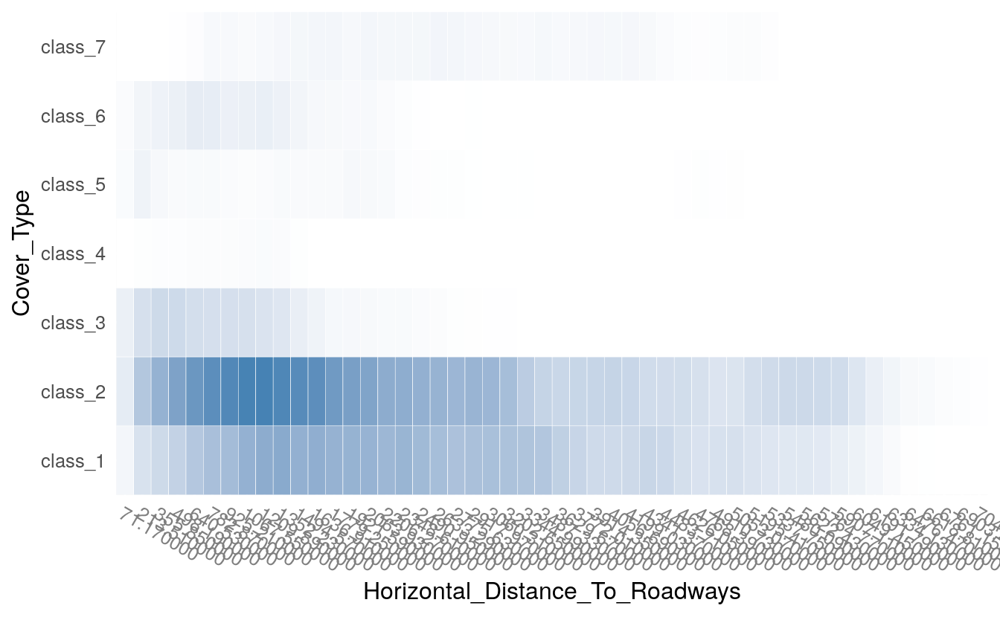
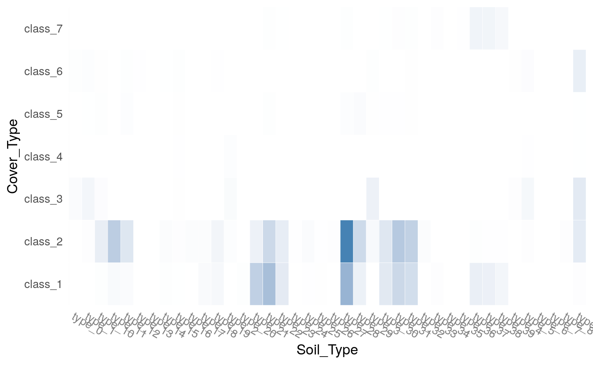
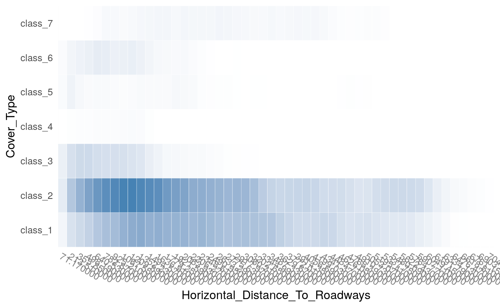
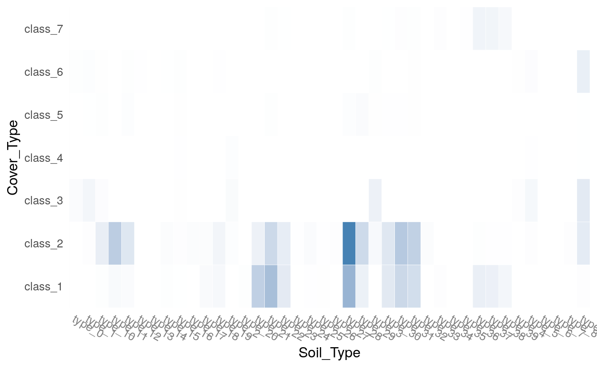

46 Deep Learning tips for Classification and Regression
- Datasets:
spiral.csv,grid.csv,covtype.full.csv - Algorithms:
- Deep Learning with
h2o
- Deep Learning with
- Techniques:
- Decision Boundaries
- Hyper-parameter Tuning with Grid Search
- Checkpointing
- Cross-Validation
46.1 Introduction
Source: http://docs.h2o.ai/h2o-tutorials/latest-stable/tutorials/deeplearning/index.html
Repo: https://github.com/h2oai/h2o-tutorials
This tutorial shows how a H2O Deep Learning model can be used to do supervised classification and regression. A great tutorial about Deep Learning is given by Quoc Le here and here. This tutorial covers usage of H2O from R. A python version of this tutorial will be available as well in a separate document. This file is available in plain R, R markdown and regular markdown formats, and the plots are available as PDF files. All documents are available on Github.
If run from plain R, execute R in the directory of this script. If run from RStudio, be sure to setwd() to the location of this script.h2o.init() starts H2O in R’s current working directory. h2o.importFile() looks for files from the perspective of where H2O was started.
More examples and explanations can be found in our H2O Deep Learning booklet and on our H2O Github Repository. The PDF slide deck can be found on Github.
46.2 H2O R Package
Load the H2O R package:
Source: http://docs.h2o.ai/h2o-tutorials/latest-stable/tutorials/deeplearning/index.html
## R installation instructions are at http://h2o.ai/download
library(h2o)
#>
#> ----------------------------------------------------------------------
#>
#> Your next step is to start H2O:
#> > h2o.init()
#>
#> For H2O package documentation, ask for help:
#> > ??h2o
#>
#> After starting H2O, you can use the Web UI at http://localhost:54321
#> For more information visit http://docs.h2o.ai
#>
#> ----------------------------------------------------------------------
#>
#> Attaching package: 'h2o'
#> The following objects are masked from 'package:stats':
#>
#> cor, sd, var
#> The following objects are masked from 'package:base':
#>
#> &&, %*%, %in%, ||, apply, as.factor, as.numeric, colnames,
#> colnames<-, ifelse, is.character, is.factor, is.numeric, log,
#> log10, log1p, log2, round, signif, trunc46.3 Start H2O
Start up a 1-node H2O server on your local machine, and allow it to use all CPU cores and up to 2GB of memory:
h2o.init(nthreads=-1, max_mem_size="2G")
#> Connection successful!
#>
#> R is connected to the H2O cluster:
#> H2O cluster uptime: 37 minutes 21 seconds
#> H2O cluster timezone: Etc/UTC
#> H2O data parsing timezone: UTC
#> H2O cluster version: 3.30.0.1
#> H2O cluster version age: 7 months and 15 days !!!
#> H2O cluster name: H2O_started_from_R_root_mwl453
#> H2O cluster total nodes: 1
#> H2O cluster total memory: 6.93 GB
#> H2O cluster total cores: 8
#> H2O cluster allowed cores: 8
#> H2O cluster healthy: TRUE
#> H2O Connection ip: localhost
#> H2O Connection port: 54321
#> H2O Connection proxy: NA
#> H2O Internal Security: FALSE
#> H2O API Extensions: Amazon S3, XGBoost, Algos, AutoML, Core V3, TargetEncoder, Core V4
#> R Version: R version 3.6.3 (2020-02-29)
#> Warning in h2o.clusterInfo():
#> Your H2O cluster version is too old (7 months and 15 days)!
#> Please download and install the latest version from http://h2o.ai/download/
h2o.removeAll() ## clean slate - just in case the cluster was already runningThe h2o.deeplearning function fits H2O’s Deep Learning models from within R. We can run the example from the man page using the example function, or run a longer demonstration from the h2o package using the demo function::
args(h2o.deeplearning)
#> function (x, y, training_frame, model_id = NULL, validation_frame = NULL,
#> nfolds = 0, keep_cross_validation_models = TRUE, keep_cross_validation_predictions = FALSE,
#> keep_cross_validation_fold_assignment = FALSE, fold_assignment = c("AUTO",
#> "Random", "Modulo", "Stratified"), fold_column = NULL,
#> ignore_const_cols = TRUE, score_each_iteration = FALSE, weights_column = NULL,
#> offset_column = NULL, balance_classes = FALSE, class_sampling_factors = NULL,
#> max_after_balance_size = 5, max_hit_ratio_k = 0, checkpoint = NULL,
#> pretrained_autoencoder = NULL, overwrite_with_best_model = TRUE,
#> use_all_factor_levels = TRUE, standardize = TRUE, activation = c("Tanh",
#> "TanhWithDropout", "Rectifier", "RectifierWithDropout",
#> "Maxout", "MaxoutWithDropout"), hidden = c(200, 200),
#> epochs = 10, train_samples_per_iteration = -2, target_ratio_comm_to_comp = 0.05,
#> seed = -1, adaptive_rate = TRUE, rho = 0.99, epsilon = 1e-08,
#> rate = 0.005, rate_annealing = 1e-06, rate_decay = 1, momentum_start = 0,
#> momentum_ramp = 1e+06, momentum_stable = 0, nesterov_accelerated_gradient = TRUE,
#> input_dropout_ratio = 0, hidden_dropout_ratios = NULL, l1 = 0,
#> l2 = 0, max_w2 = 3.4028235e+38, initial_weight_distribution = c("UniformAdaptive",
#> "Uniform", "Normal"), initial_weight_scale = 1, initial_weights = NULL,
#> initial_biases = NULL, loss = c("Automatic", "CrossEntropy",
#> "Quadratic", "Huber", "Absolute", "Quantile"), distribution = c("AUTO",
#> "bernoulli", "multinomial", "gaussian", "poisson", "gamma",
#> "tweedie", "laplace", "quantile", "huber"), quantile_alpha = 0.5,
#> tweedie_power = 1.5, huber_alpha = 0.9, score_interval = 5,
#> score_training_samples = 10000, score_validation_samples = 0,
#> score_duty_cycle = 0.1, classification_stop = 0, regression_stop = 1e-06,
#> stopping_rounds = 5, stopping_metric = c("AUTO", "deviance",
#> "logloss", "MSE", "RMSE", "MAE", "RMSLE", "AUC", "AUCPR",
#> "lift_top_group", "misclassification", "mean_per_class_error",
#> "custom", "custom_increasing"), stopping_tolerance = 0,
#> max_runtime_secs = 0, score_validation_sampling = c("Uniform",
#> "Stratified"), diagnostics = TRUE, fast_mode = TRUE,
#> force_load_balance = TRUE, variable_importances = TRUE, replicate_training_data = TRUE,
#> single_node_mode = FALSE, shuffle_training_data = FALSE,
#> missing_values_handling = c("MeanImputation", "Skip"), quiet_mode = FALSE,
#> autoencoder = FALSE, sparse = FALSE, col_major = FALSE, average_activation = 0,
#> sparsity_beta = 0, max_categorical_features = 2147483647,
#> reproducible = FALSE, export_weights_and_biases = FALSE,
#> mini_batch_size = 1, categorical_encoding = c("AUTO", "Enum",
#> "OneHotInternal", "OneHotExplicit", "Binary", "Eigen",
#> "LabelEncoder", "SortByResponse", "EnumLimited"), elastic_averaging = FALSE,
#> elastic_averaging_moving_rate = 0.9, elastic_averaging_regularization = 0.001,
#> export_checkpoints_dir = NULL, verbose = FALSE)
#> NULL
if (interactive()) help(h2o.deeplearning)
example(h2o.deeplearning)
#>
#> h2.dpl> ## Not run:
#> h2.dpl> ##D library(h2o)
#> h2.dpl> ##D h2o.init()
#> h2.dpl> ##D iris_hf <- as.h2o(iris)
#> h2.dpl> ##D iris_dl <- h2o.deeplearning(x = 1:4, y = 5, training_frame = iris_hf, seed=123456)
#> h2.dpl> ##D
#> h2.dpl> ##D # now make a prediction
#> h2.dpl> ##D predictions <- h2o.predict(iris_dl, iris_hf)
#> h2.dpl> ## End(Not run)
#> h2.dpl>
#> h2.dpl>
#> h2.dpl>
if (interactive()) demo(h2o.deeplearning) #requires user interactionWhile H2O Deep Learning has many parameters, it was designed to be just as easy to use as the other supervised training methods in H2O. Early stopping, automatic data standardization and handling of categorical variables and missing values and adaptive learning rates (per weight) reduce the amount of parameters the user has to specify. Often, it’s just the number and sizes of hidden layers, the number of epochs and the activation function and maybe some regularization techniques.
46.4 Let’s have some fun first: Decision Boundaries
We start with a small dataset representing red and black dots on a plane, arranged in the shape of two nested spirals. Then we task H2O’s machine learning methods to separate the red and black dots, i.e., recognize each spiral as such by assigning each point in the plane to one of the two spirals.
We visualize the nature of H2O Deep Learning (DL), H2O’s tree methods (GBM/DRF) and H2O’s generalized linear modeling (GLM) by plotting the decision boundary between the red and black spirals:
# setwd("~/h2o-tutorials/tutorials/deeplearning") ##For RStudio
spiral <- h2o.importFile(path = normalizePath(file.path(data_raw_dir, "spiral.csv")))
#>
|
| | 0%
|
|======================================================================| 100%
grid <- h2o.importFile(path = normalizePath(file.path(data_raw_dir, "grid.csv")))
#>
|
| | 0%
|
|================================================================== | 94%
|
|======================================================================| 100%
# Define helper to plot contours
plotC <- function(name, model, data=spiral, g=grid) {
data <- as.data.frame(data) #get data from into R
pred <- as.data.frame(h2o.predict(model, g))
n=0.5*(sqrt(nrow(g))-1); d <- 1.5; h <- d*(-n:n)/n
plot(data[,-3],pch=19,col=data[,3],cex=0.5,
xlim=c(-d,d),ylim=c(-d,d),main=name)
contour(h,h,z=array(ifelse(pred[,1]=="Red",0,1),
dim=c(2*n+1,2*n+1)),col="blue",lwd=2,add=T)
}We build a few different models:
#dev.new(noRStudioGD=FALSE) #direct plotting output to a new window
par(mfrow=c(2,2)) #set up the canvas for 2x2 plots
plotC( "DL", h2o.deeplearning(1:2,3,spiral,epochs=1e3))
plotC("GBM", h2o.gbm (1:2,3,spiral))
plotC("DRF", h2o.randomForest(1:2,3,spiral))
plotC("GLM", h2o.glm (1:2,3,spiral,family="binomial")) Let’s investigate some more Deep Learning models. First, we explore the evolution over training time (number of passes over the data), and we use checkpointing to continue training the same model:
Let’s investigate some more Deep Learning models. First, we explore the evolution over training time (number of passes over the data), and we use checkpointing to continue training the same model:
#dev.new(noRStudioGD=FALSE) #direct plotting output to a new window
par(mfrow=c(2,2)) #set up the canvas for 2x2 plots
ep <- c(1,250,500,750)
plotC(paste0("DL ",ep[1]," epochs"),
h2o.deeplearning(1:2,3,spiral,epochs=ep[1],
model_id="dl_1"))
plotC(paste0("DL ",ep[2]," epochs"),
h2o.deeplearning(1:2,3,spiral,epochs=ep[2],
checkpoint="dl_1",model_id="dl_2"))
plotC(paste0("DL ",ep[3]," epochs"),
h2o.deeplearning(1:2,3,spiral,epochs=ep[3],
checkpoint="dl_2",model_id="dl_3"))
plotC(paste0("DL ",ep[4]," epochs"),
h2o.deeplearning(1:2,3,spiral,epochs=ep[4],
checkpoint="dl_3",model_id="dl_4"))
You can see how the network learns the structure of the spirals with enough training time. We explore different network architectures next:
#dev.new(noRStudioGD=FALSE) #direct plotting output to a new window
par(mfrow=c(2,2)) #set up the canvas for 2x2 plots
for (hidden in list(c(11,13,17,19),c(42,42,42),c(200,200),c(1000))) {
plotC(paste0("DL hidden=",paste0(hidden, collapse="x")),
h2o.deeplearning(1:2,3 ,spiral, hidden=hidden, epochs=500))
}
It is clear that different configurations can achieve similar performance, and that tuning will be required for optimal performance. Next, we compare between different activation functions, including one with 50% dropout regularization in the hidden layers:
#dev.new(noRStudioGD=FALSE) #direct plotting output to a new window
par(mfrow=c(2,2)) #set up the canvas for 2x2 plots
for (act in c("Tanh", "Maxout", "Rectifier", "RectifierWithDropout")) {
plotC(paste0("DL ",act," activation"),
h2o.deeplearning(1:2,3, spiral,
activation = act,
hidden = c(100,100),
epochs = 1000))
}
Clearly, the dropout rate was too high or the number of epochs was too low for the last configuration, which often ends up performing the best on larger datasets where generalization is important.
More information about the parameters can be found in the H2O Deep Learning booklet.
46.5 Cover Type Dataset
We important the full cover type dataset (581k rows, 13 columns, 10 numerical, 3 categorical). We also split the data 3 ways: 60% for training, 20% for validation (hyper parameter tuning) and 20% for final testing.
df <- h2o.importFile(path = normalizePath(file.path(data_raw_dir, "covtype.full.csv")))
#>
|
| | 0%
|
|======================================================================| 100%
dim(df)
#> [1] 581012 13
df
#> Elevation Aspect Slope Horizontal_Distance_To_Hydrology
#> 1 3066 124 5 0
#> 2 3136 32 20 450
#> 3 2655 28 14 42
#> 4 3191 45 19 323
#> 5 3217 80 13 30
#> 6 3119 293 13 30
#> Vertical_Distance_To_Hydrology Horizontal_Distance_To_Roadways Hillshade_9am
#> 1 0 1533 229
#> 2 -38 1290 211
#> 3 8 1890 214
#> 4 88 3932 221
#> 5 1 3901 237
#> 6 10 4810 182
#> Hillshade_Noon Hillshade_3pm Horizontal_Distance_To_Fire_Points
#> 1 236 141 459
#> 2 193 111 1112
#> 3 209 128 1001
#> 4 195 100 2919
#> 5 217 109 2859
#> 6 237 194 1200
#> Wilderness_Area Soil_Type Cover_Type
#> 1 area_0 type_22 class_1
#> 2 area_0 type_28 class_1
#> 3 area_2 type_9 class_2
#> 4 area_0 type_39 class_2
#> 5 area_0 type_22 class_7
#> 6 area_0 type_21 class_1
#>
#> [581012 rows x 13 columns]
splits <- h2o.splitFrame(df, c(0.6, 0.2), seed=1234)
train <- h2o.assign(splits[[1]], "train.hex") # 60%
valid <- h2o.assign(splits[[2]], "valid.hex") # 20%
test <- h2o.assign(splits[[3]], "test.hex") # 20%Here’s a scalable way to do scatter plots via binning (works for categorical and numeric columns) to get more familiar with the dataset.
#dev.new(noRStudioGD=FALSE) #direct plotting output to a new window
par(mfrow=c(1,1)) # reset canvas
plot(h2o.tabulate(df, "Elevation", "Cover_Type"))
plot(h2o.tabulate(df, "Horizontal_Distance_To_Roadways", "Cover_Type"))
plot(h2o.tabulate(df, "Soil_Type", "Cover_Type"))
plot(h2o.tabulate(df, "Horizontal_Distance_To_Roadways", "Elevation" )) 

46.5.1 First Run of H2O Deep Learning
Let’s run our first Deep Learning model on the covtype dataset. We want to predict the Cover_Type column, a categorical feature with 7 levels, and the Deep Learning model will be tasked to perform (multi-class) classification. It uses the other 12 predictors of the dataset, of which 10 are numerical, and 2 are categorical with a total of 44 levels. We can expect the Deep Learning model to have 56 input neurons (after automatic one-hot encoding).
response <- "Cover_Type"
predictors <- setdiff(names(df), response)
predictors
#> [1] "Elevation" "Aspect"
#> [3] "Slope" "Horizontal_Distance_To_Hydrology"
#> [5] "Vertical_Distance_To_Hydrology" "Horizontal_Distance_To_Roadways"
#> [7] "Hillshade_9am" "Hillshade_Noon"
#> [9] "Hillshade_3pm" "Horizontal_Distance_To_Fire_Points"
#> [11] "Wilderness_Area" "Soil_Type"
train_df <- as.data.frame(train)
str(train_df)
#> 'data.frame': 349015 obs. of 13 variables:
#> $ Elevation : int 3136 3217 3119 2679 3261 2885 3227 2843 2853 2883 ...
#> $ Aspect : int 32 80 293 48 322 26 32 12 124 177 ...
#> $ Slope : int 20 13 13 7 13 9 6 18 12 9 ...
#> $ Horizontal_Distance_To_Hydrology : int 450 30 30 150 30 192 108 335 30 426 ...
#> $ Vertical_Distance_To_Hydrology : int -38 1 10 24 5 38 13 50 -5 126 ...
#> $ Horizontal_Distance_To_Roadways : int 1290 3901 4810 1588 5701 3271 5542 2642 1485 2139 ...
#> $ Hillshade_9am : int 211 237 182 223 186 216 219 199 240 225 ...
#> $ Hillshade_Noon : int 193 217 237 224 226 220 227 201 231 246 ...
#> $ Hillshade_3pm : int 111 109 194 136 180 140 145 135 119 153 ...
#> $ Horizontal_Distance_To_Fire_Points: int 1112 2859 1200 6265 769 2643 765 1719 2497 713 ...
#> $ Wilderness_Area : Factor w/ 4 levels "area_0","area_1",..: 1 1 1 1 1 1 1 3 3 3 ...
#> $ Soil_Type : Factor w/ 40 levels "type_0","type_1",..: 22 16 15 4 15 22 15 27 12 25 ...
#> $ Cover_Type : Factor w/ 7 levels "class_1","class_2",..: 1 7 1 2 1 2 1 2 1 2 ...
valid_df <- as.data.frame(valid)
str(valid_df)
#> 'data.frame': 116018 obs. of 13 variables:
#> $ Elevation : int 3066 2655 2902 2994 2697 2990 3237 2884 2972 2696 ...
#> $ Aspect : int 124 28 304 61 93 59 135 71 100 169 ...
#> $ Slope : int 5 14 22 9 9 12 14 9 4 10 ...
#> $ Horizontal_Distance_To_Hydrology : int 0 42 511 391 306 108 240 459 175 323 ...
#> $ Vertical_Distance_To_Hydrology : int 0 8 18 57 -2 10 -11 141 13 149 ...
#> $ Horizontal_Distance_To_Roadways : int 1533 1890 1273 4286 553 2190 1189 1214 5031 2452 ...
#> $ Hillshade_9am : int 229 214 155 227 234 229 241 231 227 228 ...
#> $ Hillshade_Noon : int 236 209 223 222 227 215 233 222 234 244 ...
#> $ Hillshade_3pm : int 141 128 206 128 125 117 118 124 142 148 ...
#> $ Horizontal_Distance_To_Fire_Points: int 459 1001 1347 1928 1716 1048 2748 1355 6198 1044 ...
#> $ Wilderness_Area : Factor w/ 4 levels "area_0","area_1",..: 1 3 3 1 1 3 1 3 1 3 ...
#> $ Soil_Type : Factor w/ 39 levels "type_0","type_1",..: 15 39 25 4 4 25 14 25 11 23 ...
#> $ Cover_Type : Factor w/ 7 levels "class_1","class_2",..: 1 2 2 2 2 2 1 2 1 3 ...To keep it fast, we only run for one epoch (one pass over the training data).
m1 <- h2o.deeplearning(
model_id="dl_model_first",
training_frame = train,
validation_frame = valid, ## validation dataset: used for scoring and early stopping
x = predictors,
y = response,
#activation="Rectifier", ## default
#hidden=c(200,200), ## default: 2 hidden layers with 200 neurons each
epochs = 1,
variable_importances=T ## not enabled by default
)
#>
|
| | 0%
|
|======= | 10%
|
|============== | 20%
|
|===================== | 30%
|
|============================ | 40%
|
|=================================== | 50%
|
|========================================== | 60%
|
|================================================= | 70%
|
|======================================================== | 80%
|
|=============================================================== | 90%
|
|======================================================================| 100%
summary(m1)
#> Model Details:
#> ==============
#>
#> H2OMultinomialModel: deeplearning
#> Model Key: dl_model_first
#> Status of Neuron Layers: predicting Cover_Type, 7-class classification, multinomial distribution, CrossEntropy loss, 53,007 weights/biases, 633.2 KB, 383,388 training samples, mini-batch size 1
#> layer units type dropout l1 l2 mean_rate rate_rms momentum
#> 1 1 56 Input 0.00 % NA NA NA NA NA
#> 2 2 200 Rectifier 0.00 % 0.000000 0.000000 0.052658 0.215717 0.000000
#> 3 3 200 Rectifier 0.00 % 0.000000 0.000000 0.009425 0.008603 0.000000
#> 4 4 7 Softmax NA 0.000000 0.000000 0.122534 0.296567 0.000000
#> mean_weight weight_rms mean_bias bias_rms
#> 1 NA NA NA NA
#> 2 -0.010819 0.120404 0.041893 0.130165
#> 3 -0.027807 0.118948 0.714695 0.371489
#> 4 -0.370677 0.507791 -0.584955 0.182773
#>
#> H2OMultinomialMetrics: deeplearning
#> ** Reported on training data. **
#> ** Metrics reported on temporary training frame with 9977 samples **
#>
#> Training Set Metrics:
#> =====================
#>
#> MSE: (Extract with `h2o.mse`) 0.134
#> RMSE: (Extract with `h2o.rmse`) 0.366
#> Logloss: (Extract with `h2o.logloss`) 0.428
#> Mean Per-Class Error: 0.333
#> Confusion Matrix: Extract with `h2o.confusionMatrix(<model>,train = TRUE)`)
#> =========================================================================
#> Confusion Matrix: Row labels: Actual class; Column labels: Predicted class
#> class_1 class_2 class_3 class_4 class_5 class_6 class_7 Error
#> class_1 2774 831 1 0 3 5 36 0.2400
#> class_2 350 4415 28 0 15 68 6 0.0957
#> class_3 2 31 470 6 2 97 0 0.2270
#> class_4 0 0 21 23 0 6 0 0.5400
#> class_5 12 69 3 0 52 6 0 0.6338
#> class_6 0 22 95 0 0 172 0 0.4048
#> class_7 62 6 0 0 0 0 288 0.1910
#> Totals 3200 5374 618 29 72 354 330 0.1787
#> Rate
#> class_1 = 876 / 3,650
#> class_2 = 467 / 4,882
#> class_3 = 138 / 608
#> class_4 = 27 / 50
#> class_5 = 90 / 142
#> class_6 = 117 / 289
#> class_7 = 68 / 356
#> Totals = 1,783 / 9,977
#>
#> Hit Ratio Table: Extract with `h2o.hit_ratio_table(<model>,train = TRUE)`
#> =======================================================================
#> Top-7 Hit Ratios:
#> k hit_ratio
#> 1 1 0.821289
#> 2 2 0.984464
#> 3 3 0.997895
#> 4 4 0.999599
#> 5 5 1.000000
#> 6 6 1.000000
#> 7 7 1.000000
#>
#>
#> H2OMultinomialMetrics: deeplearning
#> ** Reported on validation data. **
#> ** Metrics reported on full validation frame **
#>
#> Validation Set Metrics:
#> =====================
#>
#> Extract validation frame with `h2o.getFrame("valid.hex")`
#> MSE: (Extract with `h2o.mse`) 0.135
#> RMSE: (Extract with `h2o.rmse`) 0.368
#> Logloss: (Extract with `h2o.logloss`) 0.435
#> Mean Per-Class Error: 0.322
#> Confusion Matrix: Extract with `h2o.confusionMatrix(<model>,valid = TRUE)`)
#> =========================================================================
#> Confusion Matrix: Row labels: Actual class; Column labels: Predicted class
#> class_1 class_2 class_3 class_4 class_5 class_6 class_7 Error
#> class_1 32164 9801 0 0 12 50 473 0.2432
#> class_2 4212 50677 413 2 202 816 58 0.1012
#> class_3 0 433 5521 36 8 1145 0 0.2271
#> class_4 0 0 233 262 0 67 0 0.5338
#> class_5 147 959 65 0 652 47 0 0.6513
#> class_6 10 283 793 10 0 2368 0 0.3164
#> class_7 701 40 0 0 0 0 3358 0.1808
#> Totals 37234 62193 7025 310 874 4493 3889 0.1811
#> Rate
#> class_1 = 10,336 / 42,500
#> class_2 = 5,703 / 56,380
#> class_3 = 1,622 / 7,143
#> class_4 = 300 / 562
#> class_5 = 1,218 / 1,870
#> class_6 = 1,096 / 3,464
#> class_7 = 741 / 4,099
#> Totals = 21,016 / 116,018
#>
#> Hit Ratio Table: Extract with `h2o.hit_ratio_table(<model>,valid = TRUE)`
#> =======================================================================
#> Top-7 Hit Ratios:
#> k hit_ratio
#> 1 1 0.818856
#> 2 2 0.983675
#> 3 3 0.997828
#> 4 4 0.999690
#> 5 5 0.999991
#> 6 6 1.000000
#> 7 7 1.000000
#>
#>
#>
#>
#> Scoring History:
#> timestamp duration training_speed epochs iterations
#> 1 2020-11-19 17:01:09 0.000 sec NA 0.00000 0
#> 2 2020-11-19 17:01:13 6.368 sec 7555 obs/sec 0.09965 1
#> 3 2020-11-19 17:01:32 25.382 sec 11101 obs/sec 0.69840 7
#> 4 2020-11-19 17:01:46 39.543 sec 11201 obs/sec 1.09849 11
#> samples training_rmse training_logloss training_r2
#> 1 0.000000 NA NA NA
#> 2 34780.000000 0.44480 0.63300 0.89742
#> 3 243753.000000 0.38543 0.46697 0.92298
#> 4 383388.000000 0.36554 0.42776 0.93072
#> training_classification_error validation_rmse validation_logloss
#> 1 NA NA NA
#> 2 0.26411 0.44867 0.64680
#> 3 0.20267 0.38507 0.46877
#> 4 0.17871 0.36755 0.43488
#> validation_r2 validation_classification_error
#> 1 NA NA
#> 2 0.89681 0.26592
#> 3 0.92399 0.19963
#> 4 0.93075 0.18114
#>
#> Variable Importances: (Extract with `h2o.varimp`)
#> =================================================
#>
#> Variable Importances:
#> variable relative_importance scaled_importance
#> 1 Wilderness_Area.area_0 1.000000 1.000000
#> 2 Horizontal_Distance_To_Roadways 0.940270 0.940270
#> 3 Elevation 0.897750 0.897750
#> 4 Horizontal_Distance_To_Fire_Points 0.835260 0.835260
#> 5 Wilderness_Area.area_2 0.754339 0.754339
#> percentage
#> 1 0.033535
#> 2 0.031532
#> 3 0.030106
#> 4 0.028010
#> 5 0.025297
#>
#> ---
#> variable relative_importance scaled_importance percentage
#> 51 Hillshade_9am 0.411591 0.411591 0.013803
#> 52 Slope 0.397292 0.397292 0.013323
#> 53 Hillshade_3pm 0.384723 0.384723 0.012902
#> 54 Aspect 0.266706 0.266706 0.008944
#> 55 Soil_Type.missing(NA) 0.000000 0.000000 0.000000
#> 56 Wilderness_Area.missing(NA) 0.000000 0.000000 0.000000Inspect the model in Flow for more information about model building etc. by issuing a cell with the content getModel “dl_model_first”, and pressing Ctrl-Enter.
46.5.2 Variable Importances
Variable importances for Neural Network models are notoriously difficult to compute, and there are many pitfalls. H2O Deep Learning has implemented the method of Gedeon, and returns relative variable importances in descending order of importance.
head(as.data.frame(h2o.varimp(m1)))
#> variable relative_importance scaled_importance
#> 1 Wilderness_Area.area_0 1.000 1.000
#> 2 Horizontal_Distance_To_Roadways 0.940 0.940
#> 3 Elevation 0.898 0.898
#> 4 Horizontal_Distance_To_Fire_Points 0.835 0.835
#> 5 Wilderness_Area.area_2 0.754 0.754
#> 6 Wilderness_Area.area_1 0.754 0.754
#> percentage
#> 1 0.0335
#> 2 0.0315
#> 3 0.0301
#> 4 0.0280
#> 5 0.0253
#> 6 0.025346.5.3 Early Stopping
Now we run another, smaller network, and we let it stop automatically once the misclassification rate converges (specifically, if the moving average of length 2 does not improve by at least 1% for 2 consecutive scoring events). We also sample the validation set to 10,000 rows for faster scoring.
m2 <- h2o.deeplearning(
model_id="dl_model_faster",
training_frame=train,
validation_frame=valid,
x=predictors,
y=response,
hidden=c(32,32,32), ## small network, runs faster
epochs=1000000, ## hopefully converges earlier...
score_validation_samples=10000, ## sample the validation dataset (faster)
stopping_rounds=2,
stopping_metric="misclassification", ## could be "MSE","logloss","r2"
stopping_tolerance=0.01
)
#>
|
| | 0%
|
|======================================================================| 100%
summary(m2)
#> Model Details:
#> ==============
#>
#> H2OMultinomialModel: deeplearning
#> Model Key: dl_model_faster
#> Status of Neuron Layers: predicting Cover_Type, 7-class classification, multinomial distribution, CrossEntropy loss, 4,167 weights/biases, 57.9 KB, 7,599,489 training samples, mini-batch size 1
#> layer units type dropout l1 l2 mean_rate rate_rms momentum
#> 1 1 56 Input 0.00 % NA NA NA NA NA
#> 2 2 32 Rectifier 0.00 % 0.000000 0.000000 0.047492 0.210334 0.000000
#> 3 3 32 Rectifier 0.00 % 0.000000 0.000000 0.000285 0.000158 0.000000
#> 4 4 32 Rectifier 0.00 % 0.000000 0.000000 0.000585 0.000485 0.000000
#> 5 5 7 Softmax NA 0.000000 0.000000 0.130060 0.322010 0.000000
#> mean_weight weight_rms mean_bias bias_rms
#> 1 NA NA NA NA
#> 2 -0.013682 0.310562 0.298837 0.333052
#> 3 -0.067957 0.388180 0.684273 0.840598
#> 4 0.005756 0.516670 0.267690 1.023919
#> 5 -4.656668 3.913377 -5.014381 1.614360
#>
#> H2OMultinomialMetrics: deeplearning
#> ** Reported on training data. **
#> ** Metrics reported on temporary training frame with 10016 samples **
#>
#> Training Set Metrics:
#> =====================
#>
#> MSE: (Extract with `h2o.mse`) 0.112
#> RMSE: (Extract with `h2o.rmse`) 0.334
#> Logloss: (Extract with `h2o.logloss`) 0.376
#> Mean Per-Class Error: 0.238
#> Confusion Matrix: Extract with `h2o.confusionMatrix(<model>,train = TRUE)`)
#> =========================================================================
#> Confusion Matrix: Row labels: Actual class; Column labels: Predicted class
#> class_1 class_2 class_3 class_4 class_5 class_6 class_7 Error
#> class_1 3108 559 0 0 5 0 37 0.1620
#> class_2 402 4274 33 0 40 42 5 0.1088
#> class_3 0 42 471 5 1 108 0 0.2488
#> class_4 0 0 11 33 0 1 0 0.2667
#> class_5 5 66 2 0 96 1 0 0.4353
#> class_6 0 40 53 4 1 214 0 0.3141
#> class_7 46 0 0 0 0 0 311 0.1289
#> Totals 3561 4981 570 42 143 366 353 0.1507
#> Rate
#> class_1 = 601 / 3,709
#> class_2 = 522 / 4,796
#> class_3 = 156 / 627
#> class_4 = 12 / 45
#> class_5 = 74 / 170
#> class_6 = 98 / 312
#> class_7 = 46 / 357
#> Totals = 1,509 / 10,016
#>
#> Hit Ratio Table: Extract with `h2o.hit_ratio_table(<model>,train = TRUE)`
#> =======================================================================
#> Top-7 Hit Ratios:
#> k hit_ratio
#> 1 1 0.849341
#> 2 2 0.987220
#> 3 3 0.997803
#> 4 4 0.999800
#> 5 5 1.000000
#> 6 6 1.000000
#> 7 7 1.000000
#>
#>
#> H2OMultinomialMetrics: deeplearning
#> ** Reported on validation data. **
#> ** Metrics reported on temporary validation frame with 10014 samples **
#>
#> Validation Set Metrics:
#> =====================
#>
#> MSE: (Extract with `h2o.mse`) 0.113
#> RMSE: (Extract with `h2o.rmse`) 0.336
#> Logloss: (Extract with `h2o.logloss`) 0.39
#> Mean Per-Class Error: 0.242
#> Confusion Matrix: Extract with `h2o.confusionMatrix(<model>,valid = TRUE)`)
#> =========================================================================
#> Confusion Matrix: Row labels: Actual class; Column labels: Predicted class
#> class_1 class_2 class_3 class_4 class_5 class_6 class_7 Error
#> class_1 3057 544 0 0 9 1 41 0.1629
#> class_2 405 4342 27 1 29 42 6 0.1051
#> class_3 0 29 486 10 2 101 0 0.2261
#> class_4 0 0 6 32 0 5 0 0.2558
#> class_5 7 69 5 0 77 3 0 0.5217
#> class_6 3 29 53 2 0 234 0 0.2710
#> class_7 46 6 0 0 1 0 304 0.1485
#> Totals 3518 5019 577 45 118 386 351 0.1480
#> Rate
#> class_1 = 595 / 3,652
#> class_2 = 510 / 4,852
#> class_3 = 142 / 628
#> class_4 = 11 / 43
#> class_5 = 84 / 161
#> class_6 = 87 / 321
#> class_7 = 53 / 357
#> Totals = 1,482 / 10,014
#>
#> Hit Ratio Table: Extract with `h2o.hit_ratio_table(<model>,valid = TRUE)`
#> =======================================================================
#> Top-7 Hit Ratios:
#> k hit_ratio
#> 1 1 0.852007
#> 2 2 0.985321
#> 3 3 0.997603
#> 4 4 0.999501
#> 5 5 0.999800
#> 6 6 1.000000
#> 7 7 1.000000
#>
#>
#>
#>
#> Scoring History:
#> timestamp duration training_speed epochs iterations
#> 1 2020-11-19 17:01:49 0.000 sec NA 0.00000 0
#> 2 2020-11-19 17:01:50 1.189 sec 88537 obs/sec 0.28716 1
#> 3 2020-11-19 17:01:56 6.991 sec 101644 obs/sec 2.00747 7
#> 4 2020-11-19 17:02:01 12.188 sec 107787 obs/sec 3.72422 13
#> 5 2020-11-19 17:02:07 17.958 sec 112390 obs/sec 5.73168 20
#> 6 2020-11-19 17:02:12 23.734 sec 114655 obs/sec 7.73450 27
#> 7 2020-11-19 17:02:18 29.253 sec 117073 obs/sec 9.73849 34
#> 8 2020-11-19 17:02:23 34.552 sec 119499 obs/sec 11.74405 41
#> 9 2020-11-19 17:02:29 39.776 sec 121543 obs/sec 13.75260 48
#> 10 2020-11-19 17:02:34 44.990 sec 123094 obs/sec 15.75574 55
#> 11 2020-11-19 17:02:39 50.246 sec 124220 obs/sec 17.75991 62
#> 12 2020-11-19 17:02:44 55.518 sec 125127 obs/sec 19.76686 69
#> 13 2020-11-19 17:02:50 1 min 0.791 sec 125867 obs/sec 21.77410 76
#> 14 2020-11-19 17:02:50 1 min 0.823 sec 125863 obs/sec 21.77410 76
#> samples training_rmse training_logloss training_r2
#> 1 0.000000 NA NA NA
#> 2 100224.000000 0.44268 0.60390 0.90153
#> 3 700637.000000 0.39422 0.48509 0.92191
#> 4 1299808.000000 0.37110 0.44073 0.93080
#> 5 2000444.000000 0.35818 0.41691 0.93554
#> 6 2699458.000000 0.34945 0.40166 0.93864
#> 7 3398878.000000 0.35014 0.40504 0.93840
#> 8 4098849.000000 0.34498 0.40096 0.94020
#> 9 4799862.000000 0.34758 0.39933 0.93929
#> 10 5498988.000000 0.33438 0.37412 0.94382
#> 11 6198474.000000 0.33424 0.37557 0.94386
#> 12 6898930.000000 0.33194 0.37267 0.94464
#> 13 7599489.000000 0.34059 0.39607 0.94171
#> 14 7599489.000000 0.33424 0.37557 0.94386
#> training_classification_error validation_rmse validation_logloss
#> 1 NA NA NA
#> 2 0.25699 0.44077 0.59745
#> 3 0.20897 0.39503 0.48861
#> 4 0.18700 0.37374 0.44972
#> 5 0.17272 0.35972 0.42611
#> 6 0.16334 0.35390 0.41359
#> 7 0.16364 0.35017 0.41519
#> 8 0.16094 0.34166 0.40425
#> 9 0.15725 0.34710 0.40707
#> 10 0.14796 0.33386 0.38619
#> 11 0.15066 0.33559 0.38976
#> 12 0.14397 0.33380 0.38047
#> 13 0.15276 0.33726 0.39514
#> 14 0.15066 0.33559 0.38976
#> validation_r2 validation_classification_error
#> 1 NA NA
#> 2 0.90236 0.25444
#> 3 0.92157 0.20831
#> 4 0.92979 0.18774
#> 5 0.93496 0.17386
#> 6 0.93705 0.16687
#> 7 0.93837 0.16317
#> 8 0.94133 0.15598
#> 9 0.93945 0.15578
#> 10 0.94398 0.14919
#> 11 0.94340 0.14799
#> 12 0.94400 0.14839
#> 13 0.94283 0.15109
#> 14 0.94340 0.14799
#>
#> Variable Importances: (Extract with `h2o.varimp`)
#> =================================================
#>
#> Variable Importances:
#> variable relative_importance scaled_importance
#> 1 Wilderness_Area.area_3 1.000000 1.000000
#> 2 Horizontal_Distance_To_Fire_Points 0.874251 0.874251
#> 3 Wilderness_Area.area_1 0.851468 0.851468
#> 4 Horizontal_Distance_To_Roadways 0.776976 0.776976
#> 5 Wilderness_Area.area_0 0.771380 0.771380
#> percentage
#> 1 0.035152
#> 2 0.030732
#> 3 0.029931
#> 4 0.027312
#> 5 0.027116
#>
#> ---
#> variable relative_importance scaled_importance
#> 51 Horizontal_Distance_To_Hydrology 0.268715 0.268715
#> 52 Vertical_Distance_To_Hydrology 0.224822 0.224822
#> 53 Slope 0.157384 0.157384
#> 54 Aspect 0.055925 0.055925
#> 55 Soil_Type.missing(NA) 0.000000 0.000000
#> 56 Wilderness_Area.missing(NA) 0.000000 0.000000
#> percentage
#> 51 0.009446
#> 52 0.007903
#> 53 0.005532
#> 54 0.001966
#> 55 0.000000
#> 56 0.000000
plot(m2)
46.5.4 Adaptive Learning Rate
By default, H2O Deep Learning uses an adaptive learning rate (ADADELTA) for its stochastic gradient descent optimization. There are only two tuning parameters for this method: rho and epsilon, which balance the global and local search efficiencies. rho is the similarity to prior weight updates (similar to momentum), and epsilon is a parameter that prevents the optimization to get stuck in local optima. Defaults are rho=0.99 and epsilon=1e-8. For cases where convergence speed is very important, it might make sense to perform a few runs to optimize these two parameters (e.g., with rho in c(0.9,0.95,0.99,0.999) and epsilon in c(1e-10,1e-8,1e-6,1e-4)). Of course, as always with grid searches, caution has to be applied when extrapolating grid search results to a different parameter regime (e.g., for more epochs or different layer topologies or activation functions, etc.).
If adaptive_rate is disabled, several manual learning rate parameters become important: rate, rate_annealing, rate_decay, momentum_start, momentum_ramp, momentum_stable and nesterov_accelerated_gradient, the discussion of which we leave to H2O Deep Learning booklet.
46.5.5 Tuning
With some tuning, it is possible to obtain less than 10% test set error rate in about one minute. Error rates of below 5% are possible with larger models. Note that deep tree methods can be more effective for this dataset than Deep Learning, as they directly partition the space into sectors, which seems to be needed here.
m3 <- h2o.deeplearning(
model_id="dl_model_tuned",
training_frame=train,
validation_frame=valid,
x=predictors,
y=response,
overwrite_with_best_model=F, ## Return final model after 10 epochs, even if not the best
hidden=c(128,128,128), ## more hidden layers -> more complex interactions
epochs=10, ## to keep it short enough
score_validation_samples=10000, ## downsample validation set for faster scoring
score_duty_cycle=0.025, ## don't score more than 2.5% of the wall time
adaptive_rate=F, ## manually tuned learning rate
rate=0.01,
rate_annealing=2e-6,
momentum_start=0.2, ## manually tuned momentum
momentum_stable=0.4,
momentum_ramp=1e7,
l1=1e-5, ## add some L1/L2 regularization
l2=1e-5,
max_w2=10 ## helps stability for Rectifier
)
#>
|
| | 0%
|
|== | 3%
|
|==== | 6%
|
|====== | 9%
|
|======== | 11%
|
|========== | 14%
|
|============ | 17%
|
|============== | 20%
|
|================ | 23%
|
|================== | 26%
|
|==================== | 29%
|
|====================== | 32%
|
|======================== | 34%
|
|========================== | 37%
|
|============================ | 40%
|
|============================== | 43%
|
|================================ | 46%
|
|================================== | 49%
|
|==================================== | 52%
|
|====================================== | 54%
|
|======================================== | 57%
|
|========================================== | 60%
|
|============================================ | 63%
|
|============================================== | 66%
|
|================================================ | 69%
|
|================================================== | 72%
|
|==================================================== | 74%
|
|====================================================== | 77%
|
|======================================================== | 80%
|
|========================================================== | 83%
|
|============================================================ | 86%
|
|============================================================== | 89%
|
|================================================================ | 92%
|
|================================================================== | 95%
|
|==================================================================== | 97%
|
|======================================================================| 100%
summary(m3)
#> Model Details:
#> ==============
#>
#> H2OMultinomialModel: deeplearning
#> Model Key: dl_model_tuned
#> Status of Neuron Layers: predicting Cover_Type, 7-class classification, multinomial distribution, CrossEntropy loss, 41,223 weights/biases, 332.9 KB, 3,501,423 training samples, mini-batch size 1
#> layer units type dropout l1 l2 mean_rate rate_rms momentum
#> 1 1 56 Input 0.00 % NA NA NA NA NA
#> 2 2 128 Rectifier 0.00 % 0.000010 0.000010 0.001250 0.000000 0.270028
#> 3 3 128 Rectifier 0.00 % 0.000010 0.000010 0.001250 0.000000 0.270028
#> 4 4 128 Rectifier 0.00 % 0.000010 0.000010 0.001250 0.000000 0.270028
#> 5 5 7 Softmax NA 0.000010 0.000010 0.001250 0.000000 0.270028
#> mean_weight weight_rms mean_bias bias_rms
#> 1 NA NA NA NA
#> 2 -0.014029 0.313943 -0.010079 0.305512
#> 3 -0.052288 0.222216 0.899687 0.369371
#> 4 -0.061405 0.215619 0.835836 0.181308
#> 5 -0.020967 0.270920 0.011389 0.976154
#>
#> H2OMultinomialMetrics: deeplearning
#> ** Reported on training data. **
#> ** Metrics reported on temporary training frame with 10046 samples **
#>
#> Training Set Metrics:
#> =====================
#>
#> MSE: (Extract with `h2o.mse`) 0.058
#> RMSE: (Extract with `h2o.rmse`) 0.241
#> Logloss: (Extract with `h2o.logloss`) 0.192
#> Mean Per-Class Error: 0.138
#> Confusion Matrix: Extract with `h2o.confusionMatrix(<model>,train = TRUE)`)
#> =========================================================================
#> Confusion Matrix: Row labels: Actual class; Column labels: Predicted class
#> class_1 class_2 class_3 class_4 class_5 class_6 class_7 Error
#> class_1 3242 388 0 0 4 0 19 0.1125
#> class_2 153 4719 7 0 11 15 2 0.0383
#> class_3 0 16 582 2 3 33 0 0.0849
#> class_4 0 0 10 44 0 4 0 0.2414
#> class_5 3 38 1 0 117 1 0 0.2687
#> class_6 2 9 29 1 0 264 0 0.1344
#> class_7 21 6 0 0 0 0 300 0.0826
#> Totals 3421 5176 629 47 135 317 321 0.0774
#> Rate
#> class_1 = 411 / 3,653
#> class_2 = 188 / 4,907
#> class_3 = 54 / 636
#> class_4 = 14 / 58
#> class_5 = 43 / 160
#> class_6 = 41 / 305
#> class_7 = 27 / 327
#> Totals = 778 / 10,046
#>
#> Hit Ratio Table: Extract with `h2o.hit_ratio_table(<model>,train = TRUE)`
#> =======================================================================
#> Top-7 Hit Ratios:
#> k hit_ratio
#> 1 1 0.922556
#> 2 2 0.996416
#> 3 3 0.999801
#> 4 4 1.000000
#> 5 5 1.000000
#> 6 6 1.000000
#> 7 7 1.000000
#>
#>
#> H2OMultinomialMetrics: deeplearning
#> ** Reported on validation data. **
#> ** Metrics reported on temporary validation frame with 9987 samples **
#>
#> Validation Set Metrics:
#> =====================
#>
#> MSE: (Extract with `h2o.mse`) 0.0613
#> RMSE: (Extract with `h2o.rmse`) 0.248
#> Logloss: (Extract with `h2o.logloss`) 0.204
#> Mean Per-Class Error: 0.13
#> Confusion Matrix: Extract with `h2o.confusionMatrix(<model>,valid = TRUE)`)
#> =========================================================================
#> Confusion Matrix: Row labels: Actual class; Column labels: Predicted class
#> class_1 class_2 class_3 class_4 class_5 class_6 class_7 Error
#> class_1 3252 367 0 0 1 1 21 0.1071
#> class_2 186 4668 13 0 21 14 1 0.0479
#> class_3 0 23 534 3 1 38 0 0.1085
#> class_4 0 0 4 42 0 0 0 0.0870
#> class_5 1 50 1 0 106 2 0 0.3375
#> class_6 0 11 27 2 1 259 0 0.1367
#> class_7 26 2 0 0 0 0 309 0.0831
#> Totals 3465 5121 579 47 130 314 331 0.0818
#> Rate
#> class_1 = 390 / 3,642
#> class_2 = 235 / 4,903
#> class_3 = 65 / 599
#> class_4 = 4 / 46
#> class_5 = 54 / 160
#> class_6 = 41 / 300
#> class_7 = 28 / 337
#> Totals = 817 / 9,987
#>
#> Hit Ratio Table: Extract with `h2o.hit_ratio_table(<model>,valid = TRUE)`
#> =======================================================================
#> Top-7 Hit Ratios:
#> k hit_ratio
#> 1 1 0.918194
#> 2 2 0.996295
#> 3 3 0.999700
#> 4 4 1.000000
#> 5 5 1.000000
#> 6 6 1.000000
#> 7 7 1.000000
#>
#>
#>
#>
#> Scoring History:
#> timestamp duration training_speed epochs iterations
#> 1 2020-11-19 17:02:50 0.000 sec NA 0.00000 0
#> 2 2020-11-19 17:02:57 6.509 sec 16362 obs/sec 0.28725 1
#> 3 2020-11-19 17:03:14 24.109 sec 21320 obs/sec 1.43173 5
#> 4 2020-11-19 17:03:27 36.456 sec 22491 obs/sec 2.29147 8
#> 5 2020-11-19 17:03:38 47.583 sec 23658 obs/sec 3.14973 11
#> 6 2020-11-19 17:03:49 58.366 sec 24533 obs/sec 4.00855 14
#> 7 2020-11-19 17:04:00 1 min 9.468 sec 25024 obs/sec 4.86845 17
#> 8 2020-11-19 17:04:11 1 min 20.401 sec 25438 obs/sec 5.72897 20
#> 9 2020-11-19 17:04:22 1 min 31.340 sec 25750 obs/sec 6.58890 23
#> 10 2020-11-19 17:04:33 1 min 42.349 sec 25977 obs/sec 7.45041 26
#> 11 2020-11-19 17:04:43 1 min 53.011 sec 26242 obs/sec 8.31112 29
#> 12 2020-11-19 17:04:54 2 min 3.814 sec 26430 obs/sec 9.17147 32
#> 13 2020-11-19 17:05:04 2 min 14.215 sec 26668 obs/sec 10.03230 35
#> samples training_rmse training_logloss training_r2
#> 1 0.000000 NA NA NA
#> 2 100253.000000 0.42198 0.55542 0.90583
#> 3 499696.000000 0.34690 0.38095 0.93636
#> 4 799758.000000 0.31864 0.32765 0.94631
#> 5 1099303.000000 0.30723 0.30516 0.95008
#> 6 1399045.000000 0.28647 0.26619 0.95660
#> 7 1699163.000000 0.27851 0.25551 0.95898
#> 8 1999495.000000 0.27166 0.23917 0.96097
#> 9 2299625.000000 0.26491 0.22980 0.96289
#> 10 2600306.000000 0.25753 0.21728 0.96493
#> 11 2900706.000000 0.24528 0.19854 0.96819
#> 12 3200980.000000 0.24490 0.19669 0.96828
#> 13 3501423.000000 0.24083 0.19187 0.96933
#> training_classification_error validation_rmse validation_logloss
#> 1 NA NA NA
#> 2 0.23651 0.42378 0.55630
#> 3 0.16006 0.34660 0.38253
#> 4 0.13438 0.31398 0.31967
#> 5 0.12632 0.31084 0.31282
#> 6 0.11009 0.28738 0.27033
#> 7 0.10143 0.28019 0.25914
#> 8 0.09964 0.27393 0.24381
#> 9 0.09307 0.26910 0.23797
#> 10 0.08979 0.25613 0.21806
#> 11 0.08133 0.25531 0.21445
#> 12 0.07983 0.24977 0.20772
#> 13 0.07744 0.24760 0.20380
#> validation_r2 validation_classification_error
#> 1 NA NA
#> 2 0.90596 0.24091
#> 3 0.93710 0.15791
#> 4 0.94838 0.13027
#> 5 0.94941 0.12957
#> 6 0.95676 0.10754
#> 7 0.95889 0.10414
#> 8 0.96071 0.10103
#> 9 0.96208 0.09602
#> 10 0.96565 0.08691
#> 11 0.96587 0.08771
#> 12 0.96733 0.08251
#> 13 0.96790 0.08181
#>
#> Variable Importances: (Extract with `h2o.varimp`)
#> =================================================
#>
#> Variable Importances:
#> variable relative_importance scaled_importance
#> 1 Horizontal_Distance_To_Fire_Points 1.000000 1.000000
#> 2 Elevation 0.998384 0.998384
#> 3 Horizontal_Distance_To_Roadways 0.950599 0.950599
#> 4 Wilderness_Area.area_0 0.704720 0.704720
#> 5 Wilderness_Area.area_2 0.631129 0.631129
#> percentage
#> 1 0.047038
#> 2 0.046962
#> 3 0.044714
#> 4 0.033149
#> 5 0.029687
#>
#> ---
#> variable relative_importance scaled_importance percentage
#> 51 Soil_Type.type_35 0.170274 0.170274 0.008009
#> 52 Soil_Type.type_6 0.166735 0.166735 0.007843
#> 53 Soil_Type.type_7 0.166344 0.166344 0.007824
#> 54 Soil_Type.type_14 0.153097 0.153097 0.007201
#> 55 Soil_Type.missing(NA) 0.000000 0.000000 0.000000
#> 56 Wilderness_Area.missing(NA) 0.000000 0.000000 0.000000Let’s compare the training error with the validation and test set errors
h2o.performance(m3, train=T) ## sampled training data (from model building)
#> H2OMultinomialMetrics: deeplearning
#> ** Reported on training data. **
#> ** Metrics reported on temporary training frame with 10046 samples **
#>
#> Training Set Metrics:
#> =====================
#>
#> MSE: (Extract with `h2o.mse`) 0.058
#> RMSE: (Extract with `h2o.rmse`) 0.241
#> Logloss: (Extract with `h2o.logloss`) 0.192
#> Mean Per-Class Error: 0.138
#> Confusion Matrix: Extract with `h2o.confusionMatrix(<model>,train = TRUE)`)
#> =========================================================================
#> Confusion Matrix: Row labels: Actual class; Column labels: Predicted class
#> class_1 class_2 class_3 class_4 class_5 class_6 class_7 Error
#> class_1 3242 388 0 0 4 0 19 0.1125
#> class_2 153 4719 7 0 11 15 2 0.0383
#> class_3 0 16 582 2 3 33 0 0.0849
#> class_4 0 0 10 44 0 4 0 0.2414
#> class_5 3 38 1 0 117 1 0 0.2687
#> class_6 2 9 29 1 0 264 0 0.1344
#> class_7 21 6 0 0 0 0 300 0.0826
#> Totals 3421 5176 629 47 135 317 321 0.0774
#> Rate
#> class_1 = 411 / 3,653
#> class_2 = 188 / 4,907
#> class_3 = 54 / 636
#> class_4 = 14 / 58
#> class_5 = 43 / 160
#> class_6 = 41 / 305
#> class_7 = 27 / 327
#> Totals = 778 / 10,046
#>
#> Hit Ratio Table: Extract with `h2o.hit_ratio_table(<model>,train = TRUE)`
#> =======================================================================
#> Top-7 Hit Ratios:
#> k hit_ratio
#> 1 1 0.922556
#> 2 2 0.996416
#> 3 3 0.999801
#> 4 4 1.000000
#> 5 5 1.000000
#> 6 6 1.000000
#> 7 7 1.000000
h2o.performance(m3, valid=T) ## sampled validation data (from model building)
#> H2OMultinomialMetrics: deeplearning
#> ** Reported on validation data. **
#> ** Metrics reported on temporary validation frame with 9987 samples **
#>
#> Validation Set Metrics:
#> =====================
#>
#> MSE: (Extract with `h2o.mse`) 0.0613
#> RMSE: (Extract with `h2o.rmse`) 0.248
#> Logloss: (Extract with `h2o.logloss`) 0.204
#> Mean Per-Class Error: 0.13
#> Confusion Matrix: Extract with `h2o.confusionMatrix(<model>,valid = TRUE)`)
#> =========================================================================
#> Confusion Matrix: Row labels: Actual class; Column labels: Predicted class
#> class_1 class_2 class_3 class_4 class_5 class_6 class_7 Error
#> class_1 3252 367 0 0 1 1 21 0.1071
#> class_2 186 4668 13 0 21 14 1 0.0479
#> class_3 0 23 534 3 1 38 0 0.1085
#> class_4 0 0 4 42 0 0 0 0.0870
#> class_5 1 50 1 0 106 2 0 0.3375
#> class_6 0 11 27 2 1 259 0 0.1367
#> class_7 26 2 0 0 0 0 309 0.0831
#> Totals 3465 5121 579 47 130 314 331 0.0818
#> Rate
#> class_1 = 390 / 3,642
#> class_2 = 235 / 4,903
#> class_3 = 65 / 599
#> class_4 = 4 / 46
#> class_5 = 54 / 160
#> class_6 = 41 / 300
#> class_7 = 28 / 337
#> Totals = 817 / 9,987
#>
#> Hit Ratio Table: Extract with `h2o.hit_ratio_table(<model>,valid = TRUE)`
#> =======================================================================
#> Top-7 Hit Ratios:
#> k hit_ratio
#> 1 1 0.918194
#> 2 2 0.996295
#> 3 3 0.999700
#> 4 4 1.000000
#> 5 5 1.000000
#> 6 6 1.000000
#> 7 7 1.000000
h2o.performance(m3, newdata=train) ## full training data
#> H2OMultinomialMetrics: deeplearning
#>
#> Test Set Metrics:
#> =====================
#>
#> MSE: (Extract with `h2o.mse`) 0.0558
#> RMSE: (Extract with `h2o.rmse`) 0.236
#> Logloss: (Extract with `h2o.logloss`) 0.184
#> Mean Per-Class Error: 0.133
#> Confusion Matrix: Extract with `h2o.confusionMatrix(<model>, <data>)`)
#> =========================================================================
#> Confusion Matrix: Row labels: Actual class; Column labels: Predicted class
#> class_1 class_2 class_3 class_4 class_5 class_6 class_7 Error
#> class_1 114056 12279 0 0 81 19 685 0.1028
#> class_2 5766 163330 254 1 493 443 55 0.0412
#> class_3 2 502 19648 103 87 1100 0 0.0837
#> class_4 0 2 291 1283 0 82 0 0.2262
#> class_5 81 1377 73 0 4161 28 0 0.2726
#> class_6 29 280 912 43 12 9157 0 0.1223
#> class_7 846 207 0 0 2 0 11245 0.0858
#> Totals 120780 177977 21178 1430 4836 10829 11985 0.0749
#> Rate
#> class_1 = 13,064 / 127,120
#> class_2 = 7,012 / 170,342
#> class_3 = 1,794 / 21,442
#> class_4 = 375 / 1,658
#> class_5 = 1,559 / 5,720
#> class_6 = 1,276 / 10,433
#> class_7 = 1,055 / 12,300
#> Totals = 26,135 / 349,015
#>
#> Hit Ratio Table: Extract with `h2o.hit_ratio_table(<model>, <data>)`
#> =======================================================================
#> Top-7 Hit Ratios:
#> k hit_ratio
#> 1 1 0.925118
#> 2 2 0.997023
#> 3 3 0.999791
#> 4 4 0.999966
#> 5 5 1.000000
#> 6 6 1.000000
#> 7 7 1.000000
h2o.performance(m3, newdata=valid) ## full validation data
#> H2OMultinomialMetrics: deeplearning
#>
#> Test Set Metrics:
#> =====================
#>
#> MSE: (Extract with `h2o.mse`) 0.062
#> RMSE: (Extract with `h2o.rmse`) 0.249
#> Logloss: (Extract with `h2o.logloss`) 0.206
#> Mean Per-Class Error: 0.148
#> Confusion Matrix: Extract with `h2o.confusionMatrix(<model>, <data>)`)
#> =========================================================================
#> Confusion Matrix: Row labels: Actual class; Column labels: Predicted class
#> class_1 class_2 class_3 class_4 class_5 class_6 class_7 Error
#> class_1 37803 4425 0 0 21 8 243 0.1105
#> class_2 2253 53632 101 0 196 176 22 0.0487
#> class_3 4 187 6482 47 27 396 0 0.0925
#> class_4 0 1 103 424 0 34 0 0.2456
#> class_5 36 500 32 0 1291 11 0 0.3096
#> class_6 14 124 313 21 10 2982 0 0.1391
#> class_7 303 62 0 0 1 0 3733 0.0893
#> Totals 40413 58931 7031 492 1546 3607 3998 0.0834
#> Rate
#> class_1 = 4,697 / 42,500
#> class_2 = 2,748 / 56,380
#> class_3 = 661 / 7,143
#> class_4 = 138 / 562
#> class_5 = 579 / 1,870
#> class_6 = 482 / 3,464
#> class_7 = 366 / 4,099
#> Totals = 9,671 / 116,018
#>
#> Hit Ratio Table: Extract with `h2o.hit_ratio_table(<model>, <data>)`
#> =======================================================================
#> Top-7 Hit Ratios:
#> k hit_ratio
#> 1 1 0.916642
#> 2 2 0.996018
#> 3 3 0.999655
#> 4 4 0.999966
#> 5 5 1.000000
#> 6 6 1.000000
#> 7 7 1.000000
h2o.performance(m3, newdata=test) ## full test data
#> H2OMultinomialMetrics: deeplearning
#>
#> Test Set Metrics:
#> =====================
#>
#> MSE: (Extract with `h2o.mse`) 0.0614
#> RMSE: (Extract with `h2o.rmse`) 0.248
#> Logloss: (Extract with `h2o.logloss`) 0.204
#> Mean Per-Class Error: 0.142
#> Confusion Matrix: Extract with `h2o.confusionMatrix(<model>, <data>)`)
#> =========================================================================
#> Confusion Matrix: Row labels: Actual class; Column labels: Predicted class
#> class_1 class_2 class_3 class_4 class_5 class_6 class_7 Error
#> class_1 37707 4237 0 0 33 1 242 0.1069
#> class_2 2201 53848 109 1 196 195 29 0.0483
#> class_3 3 221 6483 45 24 393 0 0.0957
#> class_4 0 2 83 420 0 22 0 0.2030
#> class_5 35 498 23 0 1334 13 0 0.2990
#> class_6 18 117 325 19 9 2982 0 0.1406
#> class_7 342 68 0 0 0 0 3701 0.0997
#> Totals 40306 58991 7023 485 1596 3606 3972 0.0819
#> Rate
#> class_1 = 4,513 / 42,220
#> class_2 = 2,731 / 56,579
#> class_3 = 686 / 7,169
#> class_4 = 107 / 527
#> class_5 = 569 / 1,903
#> class_6 = 488 / 3,470
#> class_7 = 410 / 4,111
#> Totals = 9,504 / 115,979
#>
#> Hit Ratio Table: Extract with `h2o.hit_ratio_table(<model>, <data>)`
#> =======================================================================
#> Top-7 Hit Ratios:
#> k hit_ratio
#> 1 1 0.918054
#> 2 2 0.995904
#> 3 3 0.999646
#> 4 4 0.999957
#> 5 5 1.000000
#> 6 6 1.000000
#> 7 7 1.000000To confirm that the reported confusion matrix on the validation set (here, the test set) was correct, we make a prediction on the test set and compare the confusion matrices explicitly:
pred <- h2o.predict(m3, test)
#>
|
| | 0%
|
|======================================================================| 100%
pred
#> predict class_1 class_2 class_3 class_4 class_5 class_6 class_7
#> 1 class_2 7.27e-03 9.93e-01 2.33e-05 8.08e-07 2.11e-09 6.57e-08 1.05e-06
#> 2 class_1 9.88e-01 1.17e-02 4.88e-04 8.67e-06 1.53e-06 6.37e-08 1.48e-05
#> 3 class_1 1.00e+00 2.26e-06 2.42e-08 3.94e-11 1.75e-12 1.03e-15 2.09e-09
#> 4 class_1 9.99e-01 9.29e-04 2.83e-07 2.47e-09 2.68e-10 1.50e-07 2.48e-05
#> 5 class_2 9.22e-03 9.90e-01 5.27e-07 3.11e-05 3.57e-04 2.46e-06 2.54e-06
#> 6 class_5 1.08e-05 2.45e-01 2.93e-07 4.84e-12 7.55e-01 7.15e-08 9.65e-11
#>
#> [115979 rows x 8 columns]
test$Accuracy <- pred$predict == test$Cover_Type
1-mean(test$Accuracy)
#> [1] 0.081946.5.6 Hyper-parameter Tuning with Grid Search
Since there are a lot of parameters that can impact model accuracy, hyper-parameter tuning is especially important for Deep Learning:
For speed, we will only train on the first 10,000 rows of the training dataset:
sampled_train=train[1:10000,]The simplest hyperparameter search method is a brute-force scan of the full Cartesian product of all combinations specified by a grid search:
hyper_params <- list(
hidden=list(c(32,32,32),c(64,64)),
input_dropout_ratio=c(0,0.05),
rate=c(0.01,0.02),
rate_annealing=c(1e-8,1e-7,1e-6)
)
hyper_params
#> $hidden
#> $hidden[[1]]
#> [1] 32 32 32
#>
#> $hidden[[2]]
#> [1] 64 64
#>
#>
#> $input_dropout_ratio
#> [1] 0.00 0.05
#>
#> $rate
#> [1] 0.01 0.02
#>
#> $rate_annealing
#> [1] 1e-08 1e-07 1e-06
grid <- h2o.grid(
algorithm="deeplearning",
grid_id="dl_grid",
training_frame=sampled_train,
validation_frame=valid,
x=predictors,
y=response,
epochs=10,
stopping_metric="misclassification",
stopping_tolerance=1e-2, ## stop when misclassification does not improve by >=1% for 2 scoring events
stopping_rounds=2,
score_validation_samples=10000, ## downsample validation set for faster scoring
score_duty_cycle=0.025, ## don't score more than 2.5% of the wall time
adaptive_rate=F, ## manually tuned learning rate
momentum_start=0.5, ## manually tuned momentum
momentum_stable=0.9,
momentum_ramp=1e7,
l1=1e-5,
l2=1e-5,
activation=c("Rectifier"),
max_w2=10, ## can help improve stability for Rectifier
hyper_params=hyper_params
)
#>
|
| | 0%
|
|======================================================================| 100%
grid
#> H2O Grid Details
#> ================
#>
#> Grid ID: dl_grid
#> Used hyper parameters:
#> - hidden
#> - input_dropout_ratio
#> - rate
#> - rate_annealing
#> Number of models: 24
#> Number of failed models: 0
#>
#> Hyper-Parameter Search Summary: ordered by increasing logloss
#> hidden input_dropout_ratio rate rate_annealing model_ids
#> 1 [64, 64] 0.0 0.01 1.0E-6 dl_grid_model_18
#> 2 [64, 64] 0.0 0.02 1.0E-7 dl_grid_model_14
#> 3 [64, 64] 0.05 0.02 1.0E-8 dl_grid_model_8
#> 4 [64, 64] 0.0 0.01 1.0E-8 dl_grid_model_2
#> 5 [64, 64] 0.0 0.01 1.0E-7 dl_grid_model_10
#> logloss
#> 1 0.5752616014450749
#> 2 0.5822385673335893
#> 3 0.5865198619025026
#> 4 0.587039374219784
#> 5 0.5893683990958317
#>
#> ---
#> hidden input_dropout_ratio rate rate_annealing model_ids
#> 19 [32, 32, 32] 0.05 0.01 1.0E-8 dl_grid_model_3
#> 20 [32, 32, 32] 0.05 0.02 1.0E-8 dl_grid_model_7
#> 21 [64, 64] 0.05 0.02 1.0E-7 dl_grid_model_16
#> 22 [32, 32, 32] 0.0 0.01 1.0E-8 dl_grid_model_1
#> 23 [64, 64] 0.0 0.02 1.0E-6 dl_grid_model_22
#> 24 [32, 32, 32] 0.0 0.02 1.0E-8 dl_grid_model_5
#> logloss
#> 19 0.6226862967924188
#> 20 0.6367414787844445
#> 21 0.640207068426954
#> 22 0.6454103117486254
#> 23 0.6474635129176143
#> 24 0.6964901055866498Let’s see which model had the lowest validation error:
grid <- h2o.getGrid("dl_grid",sort_by="err",decreasing=FALSE)
grid
#> H2O Grid Details
#> ================
#>
#> Grid ID: dl_grid
#> Used hyper parameters:
#> - hidden
#> - input_dropout_ratio
#> - rate
#> - rate_annealing
#> Number of models: 24
#> Number of failed models: 0
#>
#> Hyper-Parameter Search Summary: ordered by increasing err
#> hidden input_dropout_ratio rate rate_annealing model_ids
#> 1 [64, 64] 0.0 0.02 1.0E-7 dl_grid_model_14
#> 2 [64, 64] 0.0 0.01 1.0E-6 dl_grid_model_18
#> 3 [64, 64] 0.05 0.02 1.0E-8 dl_grid_model_8
#> 4 [64, 64] 0.05 0.01 1.0E-6 dl_grid_model_20
#> 5 [64, 64] 0.05 0.01 1.0E-7 dl_grid_model_12
#> err
#> 1 0.24599622003382074
#> 2 0.251044776119403
#> 3 0.25198034693672916
#> 4 0.2523719165085389
#> 5 0.2527450588939908
#>
#> ---
#> hidden input_dropout_ratio rate rate_annealing model_ids
#> 19 [32, 32, 32] 0.0 0.01 1.0E-8 dl_grid_model_1
#> 20 [32, 32, 32] 0.05 0.01 1.0E-8 dl_grid_model_3
#> 21 [32, 32, 32] 0.0 0.01 1.0E-7 dl_grid_model_9
#> 22 [64, 64] 0.05 0.02 1.0E-7 dl_grid_model_16
#> 23 [32, 32, 32] 0.0 0.02 1.0E-8 dl_grid_model_5
#> 24 [64, 64] 0.0 0.02 1.0E-6 dl_grid_model_22
#> err
#> 19 0.2688580277750025
#> 20 0.2723160434258142
#> 21 0.2741464397220264
#> 22 0.2770331552957775
#> 23 0.2811588371391208
#> 24 0.28602728811871325
## To see what other "sort_by" criteria are allowed
#grid <- h2o.getGrid("dl_grid",sort_by="wrong_thing",decreasing=FALSE)
## Sort by logloss
h2o.getGrid("dl_grid",sort_by="logloss",decreasing=FALSE)
#> H2O Grid Details
#> ================
#>
#> Grid ID: dl_grid
#> Used hyper parameters:
#> - hidden
#> - input_dropout_ratio
#> - rate
#> - rate_annealing
#> Number of models: 24
#> Number of failed models: 0
#>
#> Hyper-Parameter Search Summary: ordered by increasing logloss
#> hidden input_dropout_ratio rate rate_annealing model_ids
#> 1 [64, 64] 0.0 0.01 1.0E-6 dl_grid_model_18
#> 2 [64, 64] 0.0 0.02 1.0E-7 dl_grid_model_14
#> 3 [64, 64] 0.05 0.02 1.0E-8 dl_grid_model_8
#> 4 [64, 64] 0.0 0.01 1.0E-8 dl_grid_model_2
#> 5 [64, 64] 0.0 0.01 1.0E-7 dl_grid_model_10
#> logloss
#> 1 0.5752616014450749
#> 2 0.5822385673335893
#> 3 0.5865198619025026
#> 4 0.587039374219784
#> 5 0.5893683990958317
#>
#> ---
#> hidden input_dropout_ratio rate rate_annealing model_ids
#> 19 [32, 32, 32] 0.05 0.01 1.0E-8 dl_grid_model_3
#> 20 [32, 32, 32] 0.05 0.02 1.0E-8 dl_grid_model_7
#> 21 [64, 64] 0.05 0.02 1.0E-7 dl_grid_model_16
#> 22 [32, 32, 32] 0.0 0.01 1.0E-8 dl_grid_model_1
#> 23 [64, 64] 0.0 0.02 1.0E-6 dl_grid_model_22
#> 24 [32, 32, 32] 0.0 0.02 1.0E-8 dl_grid_model_5
#> logloss
#> 19 0.6226862967924188
#> 20 0.6367414787844445
#> 21 0.640207068426954
#> 22 0.6454103117486254
#> 23 0.6474635129176143
#> 24 0.6964901055866498
## Find the best model and its full set of parameters
grid@summary_table[1,]
#> Hyper-Parameter Search Summary: ordered by increasing err
#> hidden input_dropout_ratio rate rate_annealing model_ids
#> 1 [64, 64] 0.0 0.02 1.0E-7 dl_grid_model_14
#> err
#> 1 0.24599622003382074
best_model <- h2o.getModel(grid@model_ids[[1]])
best_model
#> Model Details:
#> ==============
#>
#> H2OMultinomialModel: deeplearning
#> Model ID: dl_grid_model_14
#> Status of Neuron Layers: predicting Cover_Type, 7-class classification, multinomial distribution, CrossEntropy loss, 8,263 weights/biases, 72.2 KB, 100,000 training samples, mini-batch size 1
#> layer units type dropout l1 l2 mean_rate rate_rms momentum
#> 1 1 56 Input 0.00 % NA NA NA NA NA
#> 2 2 64 Rectifier 0.00 % 0.000010 0.000010 0.019802 0.000000 0.504000
#> 3 3 64 Rectifier 0.00 % 0.000010 0.000010 0.019802 0.000000 0.504000
#> 4 4 7 Softmax NA 0.000010 0.000010 0.019802 0.000000 0.504000
#> mean_weight weight_rms mean_bias bias_rms
#> 1 NA NA NA NA
#> 2 -0.022691 0.283640 -0.127061 0.223853
#> 3 -0.098396 0.225294 0.687686 0.247513
#> 4 -0.020195 0.389496 0.019155 1.234079
#>
#>
#> H2OMultinomialMetrics: deeplearning
#> ** Reported on training data. **
#> ** Metrics reported on full training frame **
#>
#> Training Set Metrics:
#> =====================
#>
#> Extract training frame with `h2o.getFrame("RTMP_sid_a2b5_9")`
#> MSE: (Extract with `h2o.mse`) 0.165
#> RMSE: (Extract with `h2o.rmse`) 0.407
#> Logloss: (Extract with `h2o.logloss`) 0.512
#> Mean Per-Class Error: 0.473
#> Confusion Matrix: Extract with `h2o.confusionMatrix(<model>,train = TRUE)`)
#> =========================================================================
#> Confusion Matrix: Row labels: Actual class; Column labels: Predicted class
#> class_1 class_2 class_3 class_4 class_5 class_6 class_7 Error
#> class_1 2632 975 1 0 0 3 77 0.2863
#> class_2 457 4273 74 0 19 5 7 0.1162
#> class_3 0 39 586 0 1 4 0 0.0698
#> class_4 0 1 43 0 0 0 0 1.0000
#> class_5 18 93 6 0 38 1 0 0.7564
#> class_6 0 95 171 0 0 43 0 0.8608
#> class_7 70 3 0 0 1 0 264 0.2189
#> Totals 3177 5479 881 0 59 56 348 0.2164
#> Rate
#> class_1 = 1,056 / 3,688
#> class_2 = 562 / 4,835
#> class_3 = 44 / 630
#> class_4 = 44 / 44
#> class_5 = 118 / 156
#> class_6 = 266 / 309
#> class_7 = 74 / 338
#> Totals = 2,164 / 10,000
#>
#> Hit Ratio Table: Extract with `h2o.hit_ratio_table(<model>,train = TRUE)`
#> =======================================================================
#> Top-7 Hit Ratios:
#> k hit_ratio
#> 1 1 0.783600
#> 2 2 0.977300
#> 3 3 0.997300
#> 4 4 0.999400
#> 5 5 1.000000
#> 6 6 1.000000
#> 7 7 1.000000
#>
#>
#> H2OMultinomialMetrics: deeplearning
#> ** Reported on validation data. **
#> ** Metrics reported on temporary validation frame with 10053 samples **
#>
#> Validation Set Metrics:
#> =====================
#>
#> MSE: (Extract with `h2o.mse`) 0.185
#> RMSE: (Extract with `h2o.rmse`) 0.43
#> Logloss: (Extract with `h2o.logloss`) 0.582
#> Mean Per-Class Error: 0.521
#> Confusion Matrix: Extract with `h2o.confusionMatrix(<model>,valid = TRUE)`)
#> =========================================================================
#> Confusion Matrix: Row labels: Actual class; Column labels: Predicted class
#> class_1 class_2 class_3 class_4 class_5 class_6 class_7 Error
#> class_1 2505 1119 0 0 0 0 87 0.3250
#> class_2 529 4251 83 0 23 14 5 0.1333
#> class_3 0 61 524 0 0 2 0 0.1073
#> class_4 0 0 52 1 0 0 0 0.9811
#> class_5 15 116 6 0 16 1 0 0.8961
#> class_6 0 88 170 0 0 20 0 0.9281
#> class_7 98 4 0 0 0 0 263 0.2795
#> Totals 3147 5639 835 1 39 37 355 0.2460
#> Rate
#> class_1 = 1,206 / 3,711
#> class_2 = 654 / 4,905
#> class_3 = 63 / 587
#> class_4 = 52 / 53
#> class_5 = 138 / 154
#> class_6 = 258 / 278
#> class_7 = 102 / 365
#> Totals = 2,473 / 10,053
#>
#> Hit Ratio Table: Extract with `h2o.hit_ratio_table(<model>,valid = TRUE)`
#> =======================================================================
#> Top-7 Hit Ratios:
#> k hit_ratio
#> 1 1 0.754004
#> 2 2 0.969661
#> 3 3 0.994927
#> 4 4 0.998906
#> 5 5 0.999702
#> 6 6 1.000000
#> 7 7 1.000000
print(best_model@allparameters)
#> $model_id
#> [1] "dl_grid_model_14"
#>
#> $training_frame
#> [1] "RTMP_sid_a2b5_9"
#>
#> $validation_frame
#> [1] "valid.hex"
#>
#> $nfolds
#> [1] 0
#>
#> $keep_cross_validation_models
#> [1] TRUE
#>
#> $keep_cross_validation_predictions
#> [1] FALSE
#>
#> $keep_cross_validation_fold_assignment
#> [1] FALSE
#>
#> $fold_assignment
#> [1] "AUTO"
#>
#> $ignore_const_cols
#> [1] TRUE
#>
#> $score_each_iteration
#> [1] FALSE
#>
#> $balance_classes
#> [1] FALSE
#>
#> $max_after_balance_size
#> [1] 5
#>
#> $max_confusion_matrix_size
#> [1] 20
#>
#> $max_hit_ratio_k
#> [1] 0
#>
#> $overwrite_with_best_model
#> [1] TRUE
#>
#> $use_all_factor_levels
#> [1] TRUE
#>
#> $standardize
#> [1] TRUE
#>
#> $activation
#> [1] "Rectifier"
#>
#> $hidden
#> [1] 64 64
#>
#> $epochs
#> [1] 10
#>
#> $train_samples_per_iteration
#> [1] -2
#>
#> $target_ratio_comm_to_comp
#> [1] 0.05
#>
#> $seed
#> [1] "6706057352732606115"
#>
#> $adaptive_rate
#> [1] FALSE
#>
#> $rho
#> [1] 0.99
#>
#> $epsilon
#> [1] 1e-08
#>
#> $rate
#> [1] 0.02
#>
#> $rate_annealing
#> [1] 1e-07
#>
#> $rate_decay
#> [1] 1
#>
#> $momentum_start
#> [1] 0.5
#>
#> $momentum_ramp
#> [1] 1e+07
#>
#> $momentum_stable
#> [1] 0.9
#>
#> $nesterov_accelerated_gradient
#> [1] TRUE
#>
#> $input_dropout_ratio
#> [1] 0
#>
#> $l1
#> [1] 1e-05
#>
#> $l2
#> [1] 1e-05
#>
#> $max_w2
#> [1] 10
#>
#> $initial_weight_distribution
#> [1] "UniformAdaptive"
#>
#> $initial_weight_scale
#> [1] 1
#>
#> $loss
#> [1] "Automatic"
#>
#> $distribution
#> [1] "AUTO"
#>
#> $quantile_alpha
#> [1] 0.5
#>
#> $tweedie_power
#> [1] 1.5
#>
#> $huber_alpha
#> [1] 0.9
#>
#> $score_interval
#> [1] 5
#>
#> $score_training_samples
#> [1] 10000
#>
#> $score_validation_samples
#> [1] 10000
#>
#> $score_duty_cycle
#> [1] 0.025
#>
#> $classification_stop
#> [1] 0
#>
#> $regression_stop
#> [1] 1e-06
#>
#> $stopping_rounds
#> [1] 2
#>
#> $stopping_metric
#> [1] "misclassification"
#>
#> $stopping_tolerance
#> [1] 0.01
#>
#> $max_runtime_secs
#> [1] 1.8e+308
#>
#> $score_validation_sampling
#> [1] "Uniform"
#>
#> $diagnostics
#> [1] TRUE
#>
#> $fast_mode
#> [1] TRUE
#>
#> $force_load_balance
#> [1] TRUE
#>
#> $variable_importances
#> [1] TRUE
#>
#> $replicate_training_data
#> [1] TRUE
#>
#> $single_node_mode
#> [1] FALSE
#>
#> $shuffle_training_data
#> [1] FALSE
#>
#> $missing_values_handling
#> [1] "MeanImputation"
#>
#> $quiet_mode
#> [1] FALSE
#>
#> $autoencoder
#> [1] FALSE
#>
#> $sparse
#> [1] FALSE
#>
#> $col_major
#> [1] FALSE
#>
#> $average_activation
#> [1] 0
#>
#> $sparsity_beta
#> [1] 0
#>
#> $max_categorical_features
#> [1] 2147483647
#>
#> $reproducible
#> [1] FALSE
#>
#> $export_weights_and_biases
#> [1] FALSE
#>
#> $mini_batch_size
#> [1] 1
#>
#> $categorical_encoding
#> [1] "AUTO"
#>
#> $elastic_averaging
#> [1] FALSE
#>
#> $elastic_averaging_moving_rate
#> [1] 0.9
#>
#> $elastic_averaging_regularization
#> [1] 0.001
#>
#> $x
#> [1] "Soil_Type" "Wilderness_Area"
#> [3] "Elevation" "Aspect"
#> [5] "Slope" "Horizontal_Distance_To_Hydrology"
#> [7] "Vertical_Distance_To_Hydrology" "Horizontal_Distance_To_Roadways"
#> [9] "Hillshade_9am" "Hillshade_Noon"
#> [11] "Hillshade_3pm" "Horizontal_Distance_To_Fire_Points"
#>
#> $y
#> [1] "Cover_Type"
print(h2o.performance(best_model, valid=T))
#> H2OMultinomialMetrics: deeplearning
#> ** Reported on validation data. **
#> ** Metrics reported on temporary validation frame with 10053 samples **
#>
#> Validation Set Metrics:
#> =====================
#>
#> MSE: (Extract with `h2o.mse`) 0.185
#> RMSE: (Extract with `h2o.rmse`) 0.43
#> Logloss: (Extract with `h2o.logloss`) 0.582
#> Mean Per-Class Error: 0.521
#> Confusion Matrix: Extract with `h2o.confusionMatrix(<model>,valid = TRUE)`)
#> =========================================================================
#> Confusion Matrix: Row labels: Actual class; Column labels: Predicted class
#> class_1 class_2 class_3 class_4 class_5 class_6 class_7 Error
#> class_1 2505 1119 0 0 0 0 87 0.3250
#> class_2 529 4251 83 0 23 14 5 0.1333
#> class_3 0 61 524 0 0 2 0 0.1073
#> class_4 0 0 52 1 0 0 0 0.9811
#> class_5 15 116 6 0 16 1 0 0.8961
#> class_6 0 88 170 0 0 20 0 0.9281
#> class_7 98 4 0 0 0 0 263 0.2795
#> Totals 3147 5639 835 1 39 37 355 0.2460
#> Rate
#> class_1 = 1,206 / 3,711
#> class_2 = 654 / 4,905
#> class_3 = 63 / 587
#> class_4 = 52 / 53
#> class_5 = 138 / 154
#> class_6 = 258 / 278
#> class_7 = 102 / 365
#> Totals = 2,473 / 10,053
#>
#> Hit Ratio Table: Extract with `h2o.hit_ratio_table(<model>,valid = TRUE)`
#> =======================================================================
#> Top-7 Hit Ratios:
#> k hit_ratio
#> 1 1 0.754004
#> 2 2 0.969661
#> 3 3 0.994927
#> 4 4 0.998906
#> 5 5 0.999702
#> 6 6 1.000000
#> 7 7 1.000000
print(h2o.logloss(best_model, valid=T))
#> [1] 0.58246.5.7 Random Hyper-Parameter Search
Often, hyper-parameter search for more than 4 parameters can be done more efficiently with random parameter search than with grid search. Basically, chances are good to find one of many good models in less time than performing an exhaustive grid search. We simply build up to max_models models with parameters drawn randomly from user-specified distributions (here, uniform). For this example, we use the adaptive learning rate and focus on tuning the network architecture and the regularization parameters. We also let the grid search stop automatically once the performance at the top of the leaderboard doesn’t change much anymore, i.e., once the search has converged.
hyper_params <- list(
activation=c("Rectifier","Tanh","Maxout","RectifierWithDropout","TanhWithDropout","MaxoutWithDropout"),
hidden=list(c(20,20),c(50,50),c(30,30,30),c(25,25,25,25)),
input_dropout_ratio=c(0,0.05),
l1=seq(0,1e-4,1e-6),
l2=seq(0,1e-4,1e-6)
)
hyper_params
## Stop once the top 5 models are within 1% of each other (i.e., the windowed average varies less than 1%)
search_criteria = list(strategy = "RandomDiscrete", max_runtime_secs = 360, max_models = 100, seed=1234567, stopping_rounds=5, stopping_tolerance=1e-2)
dl_random_grid <- h2o.grid(
algorithm="deeplearning",
grid_id = "dl_grid_random",
training_frame=sampled_train,
validation_frame=valid,
x=predictors,
y=response,
epochs=1,
stopping_metric="logloss",
stopping_tolerance=1e-2, ## stop when logloss does not improve by >=1% for 2 scoring events
stopping_rounds=2,
score_validation_samples=10000, ## downsample validation set for faster scoring
score_duty_cycle=0.025, ## don't score more than 2.5% of the wall time
max_w2=10, ## can help improve stability for Rectifier
hyper_params = hyper_params,
search_criteria = search_criteria
)
grid <- h2o.getGrid("dl_grid_random",sort_by="logloss",decreasing=FALSE)
grid
grid@summary_table[1,]
best_model <- h2o.getModel(grid@model_ids[[1]]) ## model with lowest logloss
best_modelLet’s look at the model with the lowest validation misclassification rate:
grid <- h2o.getGrid("dl_grid",sort_by="err",decreasing=FALSE)
best_model <- h2o.getModel(grid@model_ids[[1]]) ## model with lowest classification error (on validation, since it was available during training)
h2o.confusionMatrix(best_model,valid=T)
#> Confusion Matrix: Row labels: Actual class; Column labels: Predicted class
#> class_1 class_2 class_3 class_4 class_5 class_6 class_7 Error
#> class_1 2505 1119 0 0 0 0 87 0.3250
#> class_2 529 4251 83 0 23 14 5 0.1333
#> class_3 0 61 524 0 0 2 0 0.1073
#> class_4 0 0 52 1 0 0 0 0.9811
#> class_5 15 116 6 0 16 1 0 0.8961
#> class_6 0 88 170 0 0 20 0 0.9281
#> class_7 98 4 0 0 0 0 263 0.2795
#> Totals 3147 5639 835 1 39 37 355 0.2460
#> Rate
#> class_1 = 1,206 / 3,711
#> class_2 = 654 / 4,905
#> class_3 = 63 / 587
#> class_4 = 52 / 53
#> class_5 = 138 / 154
#> class_6 = 258 / 278
#> class_7 = 102 / 365
#> Totals = 2,473 / 10,053
best_params <- best_model@allparameters
best_params$activation
#> [1] "Rectifier"
best_params$hidden
#> [1] 64 64
best_params$input_dropout_ratio
#> [1] 0
best_params$l1
#> [1] 1e-05
best_params$l2
#> [1] 1e-0546.5.8 Checkpointing
Let’s continue training the manually tuned model from before, for 2 more epochs. Note that since many important parameters such as epochs, l1, l2, max_w2, score_interval, train_samples_per_iteration, input_dropout_ratio, hidden_dropout_ratios, score_duty_cycle, classification_stop, regression_stop, variable_importances, force_load_balance can be modified between checkpoint restarts, it is best to specify as many parameters as possible explicitly.
max_epochs <- 12 ## Add two more epochs
m_cont <- h2o.deeplearning(
model_id="dl_model_tuned_continued",
checkpoint="dl_model_tuned",
training_frame=train,
validation_frame=valid,
x=predictors,
y=response,
hidden=c(128,128,128), ## more hidden layers -> more complex interactions
epochs=max_epochs, ## hopefully long enough to converge (otherwise restart again)
stopping_metric="logloss", ## logloss is directly optimized by Deep Learning
stopping_tolerance=1e-2, ## stop when validation logloss does not improve by >=1% for 2 scoring events
stopping_rounds=2,
score_validation_samples=10000, ## downsample validation set for faster scoring
score_duty_cycle=0.025, ## don't score more than 2.5% of the wall time
adaptive_rate=F, ## manually tuned learning rate
rate=0.01,
rate_annealing=2e-6,
momentum_start=0.2, ## manually tuned momentum
momentum_stable=0.4,
momentum_ramp=1e7,
l1=1e-5, ## add some L1/L2 regularization
l2=1e-5,
max_w2=10 ## helps stability for Rectifier
)
summary(m_cont)
plot(m_cont)
Once we are satisfied with the results, we can save the model to disk (on the cluster). In this example, we store the model in a directory called mybest_deeplearning_covtype_model, which will be created for us since force=TRUE.
path <- h2o.saveModel(m_cont,
path = file.path(data_out_dir, "mybest_deeplearning_covtype_model"), force=TRUE)It can be loaded later with the following command:
print(path)
#> [1] "/home/rstudio/all/output/data/mybest_deeplearning_covtype_model/dl_model_tuned_continued"
m_loaded <- h2o.loadModel(path)
summary(m_loaded)
#> Model Details:
#> ==============
#>
#> H2OMultinomialModel: deeplearning
#> Model Key: dl_model_tuned_continued
#> Status of Neuron Layers: predicting Cover_Type, 7-class classification, multinomial distribution, CrossEntropy loss, 41,223 weights/biases, 333.0 KB, 4,201,157 training samples, mini-batch size 1
#> layer units type dropout l1 l2 mean_rate rate_rms momentum
#> 1 1 56 Input 0.00 % NA NA NA NA NA
#> 2 2 128 Rectifier 0.00 % 0.000010 0.000010 0.001064 0.000000 0.284023
#> 3 3 128 Rectifier 0.00 % 0.000010 0.000010 0.001064 0.000000 0.284023
#> 4 4 128 Rectifier 0.00 % 0.000010 0.000010 0.001064 0.000000 0.284023
#> 5 5 7 Softmax NA 0.000010 0.000010 0.001064 0.000000 0.284023
#> mean_weight weight_rms mean_bias bias_rms
#> 1 NA NA NA NA
#> 2 -0.013889 0.322819 -0.013367 0.317160
#> 3 -0.052496 0.227175 0.901665 0.377626
#> 4 -0.061822 0.220802 0.837100 0.185829
#> 5 -0.020984 0.270745 0.010907 0.982486
#>
#> H2OMultinomialMetrics: deeplearning
#> ** Reported on training data. **
#> ** Metrics reported on temporary training frame with 9850 samples **
#>
#> Training Set Metrics:
#> =====================
#>
#> MSE: (Extract with `h2o.mse`) 0.0516
#> RMSE: (Extract with `h2o.rmse`) 0.227
#> Logloss: (Extract with `h2o.logloss`) 0.171
#> Mean Per-Class Error: 0.108
#> Confusion Matrix: Extract with `h2o.confusionMatrix(<model>,train = TRUE)`)
#> =========================================================================
#> Confusion Matrix: Row labels: Actual class; Column labels: Predicted class
#> class_1 class_2 class_3 class_4 class_5 class_6 class_7 Error
#> class_1 3296 278 0 0 4 1 8 0.0811
#> class_2 190 4631 14 0 17 16 2 0.0491
#> class_3 0 7 502 5 3 29 0 0.0806
#> class_4 0 0 6 44 0 0 0 0.1200
#> class_5 2 24 3 0 113 1 0 0.2098
#> class_6 0 10 29 4 1 270 0 0.1401
#> class_7 25 1 0 0 0 0 314 0.0765
#> Totals 3513 4951 554 53 138 317 324 0.0690
#> Rate
#> class_1 = 291 / 3,587
#> class_2 = 239 / 4,870
#> class_3 = 44 / 546
#> class_4 = 6 / 50
#> class_5 = 30 / 143
#> class_6 = 44 / 314
#> class_7 = 26 / 340
#> Totals = 680 / 9,850
#>
#> Hit Ratio Table: Extract with `h2o.hit_ratio_table(<model>,train = TRUE)`
#> =======================================================================
#> Top-7 Hit Ratios:
#> k hit_ratio
#> 1 1 0.930964
#> 2 2 0.997462
#> 3 3 0.999695
#> 4 4 0.999899
#> 5 5 1.000000
#> 6 6 1.000000
#> 7 7 1.000000
#>
#>
#> H2OMultinomialMetrics: deeplearning
#> ** Reported on validation data. **
#> ** Metrics reported on temporary validation frame with 9914 samples **
#>
#> Validation Set Metrics:
#> =====================
#>
#> MSE: (Extract with `h2o.mse`) 0.0571
#> RMSE: (Extract with `h2o.rmse`) 0.239
#> Logloss: (Extract with `h2o.logloss`) 0.191
#> Mean Per-Class Error: 0.12
#> Confusion Matrix: Extract with `h2o.confusionMatrix(<model>,valid = TRUE)`)
#> =========================================================================
#> Confusion Matrix: Row labels: Actual class; Column labels: Predicted class
#> class_1 class_2 class_3 class_4 class_5 class_6 class_7 Error
#> class_1 3198 316 0 0 5 1 11 0.0943
#> class_2 199 4630 9 0 29 18 1 0.0524
#> class_3 0 14 558 9 2 28 0 0.0867
#> class_4 0 0 6 53 0 4 0 0.1587
#> class_5 0 31 2 0 131 0 0 0.2012
#> class_6 1 12 32 1 0 272 0 0.1447
#> class_7 33 2 0 0 0 0 306 0.1026
#> Totals 3431 5005 607 63 167 323 318 0.0773
#> Rate
#> class_1 = 333 / 3,531
#> class_2 = 256 / 4,886
#> class_3 = 53 / 611
#> class_4 = 10 / 63
#> class_5 = 33 / 164
#> class_6 = 46 / 318
#> class_7 = 35 / 341
#> Totals = 766 / 9,914
#>
#> Hit Ratio Table: Extract with `h2o.hit_ratio_table(<model>,valid = TRUE)`
#> =======================================================================
#> Top-7 Hit Ratios:
#> k hit_ratio
#> 1 1 0.922736
#> 2 2 0.997176
#> 3 3 0.999798
#> 4 4 0.999899
#> 5 5 1.000000
#> 6 6 1.000000
#> 7 7 1.000000
#>
#>
#>
#>
#> Scoring History:
#> timestamp duration training_speed epochs iterations
#> 1 2020-11-19 17:02:50 0.000 sec NA 0.00000 0
#> 2 2020-11-19 17:02:57 6.509 sec 16362 obs/sec 0.28725 1
#> 3 2020-11-19 17:03:14 24.109 sec 21320 obs/sec 1.43173 5
#> 4 2020-11-19 17:03:27 36.456 sec 22491 obs/sec 2.29147 8
#> 5 2020-11-19 17:03:38 47.583 sec 23658 obs/sec 3.14973 11
#> 6 2020-11-19 17:03:49 58.366 sec 24533 obs/sec 4.00855 14
#> 7 2020-11-19 17:04:00 1 min 9.468 sec 25024 obs/sec 4.86845 17
#> 8 2020-11-19 17:04:11 1 min 20.401 sec 25438 obs/sec 5.72897 20
#> 9 2020-11-19 17:04:22 1 min 31.340 sec 25750 obs/sec 6.58890 23
#> 10 2020-11-19 17:04:33 1 min 42.349 sec 25977 obs/sec 7.45041 26
#> 11 2020-11-19 17:04:43 1 min 53.011 sec 26242 obs/sec 8.31112 29
#> 12 2020-11-19 17:04:54 2 min 3.814 sec 26430 obs/sec 9.17147 32
#> 13 2020-11-19 17:05:04 2 min 14.215 sec 26668 obs/sec 10.03230 35
#> 14 2020-11-19 17:06:12 2 min 17.811 sec 26750 obs/sec 10.31993 36
#> 15 2020-11-19 17:06:23 2 min 28.960 sec 26797 obs/sec 11.17677 39
#> 16 2020-11-19 17:06:33 2 min 39.480 sec 26952 obs/sec 12.03718 42
#> samples training_rmse training_logloss training_r2
#> 1 0.000000 NA NA NA
#> 2 100253.000000 0.42198 0.55542 0.90583
#> 3 499696.000000 0.34690 0.38095 0.93636
#> 4 799758.000000 0.31864 0.32765 0.94631
#> 5 1099303.000000 0.30723 0.30516 0.95008
#> 6 1399045.000000 0.28647 0.26619 0.95660
#> 7 1699163.000000 0.27851 0.25551 0.95898
#> 8 1999495.000000 0.27166 0.23917 0.96097
#> 9 2299625.000000 0.26491 0.22980 0.96289
#> 10 2600306.000000 0.25753 0.21728 0.96493
#> 11 2900706.000000 0.24528 0.19854 0.96819
#> 12 3200980.000000 0.24490 0.19669 0.96828
#> 13 3501423.000000 0.24083 0.19187 0.96933
#> 14 3601809.000000 0.23301 0.17859 0.97204
#> 15 3900861.000000 0.23110 0.17633 0.97249
#> 16 4201157.000000 0.22726 0.17065 0.97340
#> training_classification_error validation_rmse validation_logloss
#> 1 NA NA NA
#> 2 0.23651 0.42378 0.55630
#> 3 0.16006 0.34660 0.38253
#> 4 0.13438 0.31398 0.31967
#> 5 0.12632 0.31084 0.31282
#> 6 0.11009 0.28738 0.27033
#> 7 0.10143 0.28019 0.25914
#> 8 0.09964 0.27393 0.24381
#> 9 0.09307 0.26910 0.23797
#> 10 0.08979 0.25613 0.21806
#> 11 0.08133 0.25531 0.21445
#> 12 0.07983 0.24977 0.20772
#> 13 0.07744 0.24760 0.20380
#> 14 0.07279 0.24760 0.20241
#> 15 0.07168 0.24411 0.19920
#> 16 0.06904 0.23889 0.19082
#> validation_r2 validation_classification_error
#> 1 NA NA
#> 2 0.90596 0.24091
#> 3 0.93710 0.15791
#> 4 0.94838 0.13027
#> 5 0.94941 0.12957
#> 6 0.95676 0.10754
#> 7 0.95889 0.10414
#> 8 0.96071 0.10103
#> 9 0.96208 0.09602
#> 10 0.96565 0.08691
#> 11 0.96587 0.08771
#> 12 0.96733 0.08251
#> 13 0.96790 0.08181
#> 14 0.96873 0.08190
#> 15 0.96961 0.07827
#> 16 0.97089 0.07726
#>
#> Variable Importances: (Extract with `h2o.varimp`)
#> =================================================
#>
#> Variable Importances:
#> variable relative_importance scaled_importance
#> 1 Horizontal_Distance_To_Fire_Points 1.000000 1.000000
#> 2 Elevation 0.995377 0.995377
#> 3 Horizontal_Distance_To_Roadways 0.945073 0.945073
#> 4 Wilderness_Area.area_0 0.698678 0.698678
#> 5 Wilderness_Area.area_2 0.626186 0.626186
#> percentage
#> 1 0.047423
#> 2 0.047204
#> 3 0.044818
#> 4 0.033133
#> 5 0.029696
#>
#> ---
#> variable relative_importance scaled_importance percentage
#> 51 Soil_Type.type_35 0.164608 0.164608 0.007806
#> 52 Soil_Type.type_6 0.161731 0.161731 0.007670
#> 53 Soil_Type.type_7 0.160922 0.160922 0.007631
#> 54 Soil_Type.type_14 0.148023 0.148023 0.007020
#> 55 Soil_Type.missing(NA) 0.000000 0.000000 0.000000
#> 56 Wilderness_Area.missing(NA) 0.000000 0.000000 0.000000This model is fully functional and can be inspected, restarted, or used to score a dataset, etc. Note that binary compatibility between H2O versions is currently not guaranteed.
46.5.9 Cross-Validation
For N-fold cross-validation, specify nfolds>1 instead of (or in addition to) a validation frame, and N+1 models will be built: 1 model on the full training data, and N models with each 1/N-th of the data held out (there are different holdout strategies). Those N models then score on the held out data, and their combined predictions on the full training data are scored to get the cross-validation metrics.
dlmodel <- h2o.deeplearning(
x=predictors,
y=response,
training_frame=train,
hidden=c(10,10),
epochs=1,
nfolds=5,
fold_assignment="Modulo" # can be "AUTO", "Modulo", "Random" or "Stratified"
)
dlmodelN-fold cross-validation is especially useful with early stopping, as the main model will pick the ideal number of epochs from the convergence behavior of the cross-validation models.
46.6 Regression and Binary Classification
Assume we want to turn the multi-class problem above into a binary classification problem. We create a binary response as follows:
train$bin_response <- ifelse(train[,response] == "class_1", 0, 1)Let’s build a quick model and inspect the model:
dlmodel <- h2o.deeplearning(
x=predictors,
y="bin_response",
training_frame=train,
hidden=c(10,10),
epochs=0.1
)
summary(dlmodel)Instead of a binary classification model, we find a regression model (H2ORegressionModel) that contains only 1 output neuron (instead of 2). The reason is that the response was a numerical feature (ordinal numbers 0 and 1), and H2O Deep Learning was run with distribution=AUTO, which defaulted to a Gaussian regression problem for a real-valued response. H2O Deep Learning supports regression for distributions other than Gaussian such as Poisson, Gamma, Tweedie, Laplace. It also supports Huber loss and per-row offsets specified via an offset_column. We refer to our H2O Deep Learning regression code examples for more information.
To perform classification, the response must first be turned into a categorical (factor) feature:
train$bin_response <- as.factor(train$bin_response) ##make categorical
dlmodel <- h2o.deeplearning(
x=predictors,
y="bin_response",
training_frame=train,
hidden=c(10,10),
epochs=0.1
#balance_classes=T ## enable this for high class imbalance
)
summary(dlmodel) ## Now the model metrics contain AUC for binary classification
plot(h2o.performance(dlmodel)) ## display ROC curveNow the model performs (binary) classification, and has multiple (2) output neurons.
46.7 Unsupervised Anomaly detection
For instructions on how to build unsupervised models with H2O Deep Learning, we refer to our previous Tutorial on Anomaly Detection with H2O Deep Learning and our MNIST Anomaly detection code example, as well as our Stacked AutoEncoder R code example and another one for Unsupervised Pretraining with an AutoEncoder R code example.
46.8 H2O Deep Learning Tips & Tricks
46.8.1 Performance Tuning
The Definitive H2O Deep Learning Performance Tuning blog post covers many of the following points that affect the computational efficiency, so it’s highly recommended.
46.8.2 Activation Functions
While sigmoids have been used historically for neural networks, H2O Deep Learning implements Tanh, a scaled and shifted variant of the sigmoid which is symmetric around 0. Since its output values are bounded by -1..1, the stability of the neural network is rarely endangered. However, the derivative of the tanh function is always non-zero and back-propagation (training) of the weights is more computationally expensive than for rectified linear units, or Rectifier, which is max(0,x) and has vanishing gradient for x<=0, leading to much faster training speed for large networks and is often the fastest path to accuracy on larger problems. In case you encounter instabilities with the Rectifier (in which case model building is automatically aborted), try a limited value to re-scale the weights: max_w2=10. The Maxout activation function is computationally more expensive, but can lead to higher accuracy. It is a generalized version of the Rectifier with two non-zero channels. In practice, the Rectifier (and RectifierWithDropout, see below) is the most versatile and performant option for most problems.
46.8.3 Generalization Techniques
L1 and L2 penalties can be applied by specifying the l1 and l2 parameters. Intuition: L1 lets only strong weights survive (constant pulling force towards zero), while L2 prevents any single weight from getting too big. Dropout has recently been introduced as a powerful generalization technique, and is available as a parameter per layer, including the input layer. input_dropout_ratio controls the amount of input layer neurons that are randomly dropped (set to zero), while hidden_dropout_ratios are specified for each hidden layer. The former controls overfitting with respect to the input data (useful for high-dimensional noisy data), while the latter controls overfitting of the learned features. Note that hidden_dropout_ratios require the activation function to end with …WithDropout.
46.8.4 Early stopping and optimizing for lowest validation error
By default, Deep Learning training stops when the stopping_metric does not improve by at least stopping_tolerance (0.01 means 1% improvement) for stopping_rounds consecutive scoring events on the training (or validation) data. By default, overwrite_with_best_model is enabled and the model returned after training for the specified number of epochs (or after stopping early due to convergence) is the model that has the best training set error (according to the metric specified by stopping_metric), or, if a validation set is provided, the lowest validation set error. Note that the training or validation set errors can be based on a subset of the training or validation data, depending on the values for score_validation_samples or score_training_samples, see below. For early stopping on a predefined error rate on the training data (accuracy for classification or MSE for regression), specify classification_stop or regression_stop.
46.8.5 Training Samples per MapReduce Iteration
The parameter train_samples_per_iteration matters especially in multi-node operation. It controls the number of rows trained on for each MapReduce iteration. Depending on the value selected, one MapReduce pass can sample observations, and multiple such passes are needed to train for one epoch. All H2O compute nodes then communicate to agree on the best model coefficients (weights/biases) so far, and the model may then be scored (controlled by other parameters below). The default value of -2 indicates auto-tuning, which attemps to keep the communication overhead at 5% of the total runtime. The parameter target_ratio_comm_to_comp controls this ratio. This parameter is explained in more detail in the H2O Deep Learning booklet,
46.8.6 Categorical Data
For categorical data, a feature with K factor levels is automatically one-hot encoded (horizontalized) into K-1 input neurons. Hence, the input neuron layer can grow substantially for datasets with high factor counts. In these cases, it might make sense to reduce the number of hidden neurons in the first hidden layer, such that large numbers of factor levels can be handled. In the limit of 1 neuron in the first hidden layer, the resulting model is similar to logistic regression with stochastic gradient descent, except that for classification problems, there’s still a softmax output layer, and that the activation function is not necessarily a sigmoid (Tanh). If variable importances are computed, it is recommended to turn on use_all_factor_levels (K input neurons for K levels). The experimental option max_categorical_features uses feature hashing to reduce the number of input neurons via the hash trick at the expense of hash collisions and reduced accuracy. Another way to reduce the dimensionality of the (categorical) features is to use h2o.glrm(), we refer to the GLRM tutorial for more details.
46.8.7 Sparse Data
If the input data is sparse (many zeros), then it might make sense to enable the sparse option. This will result in the input not being standardized (0 mean, 1 variance), but only de-scaled (1 variance) and 0 values remain 0, leading to more efficient back-propagation. Sparsity is also a reason why CPU implementations can be faster than GPU implementations, because they can take advantage of if/else statements more effectively.
46.8.8 Missing Values
H2O Deep Learning automatically does mean imputation for missing values during training (leaving the input layer activation at 0 after standardizing the values). For testing, missing test set values are also treated the same way by default. See the h2o.impute function to do your own mean imputation.
46.8.9 Loss functions, Distributions, Offsets, Observation Weights
H2O Deep Learning supports advanced statistical features such as multiple loss functions, non-Gaussian distributions, per-row offsets and observation weights. In addition to Gaussian distributions and Squared loss, H2O Deep Learning supports Poisson, Gamma, Tweedie and Laplace distributions. It also supports Absolute and Huber loss and per-row offsets specified via an offset_column. Observation weights are supported via a user-specified weights_column.
We refer to our H2O Deep Learning R test code examples for more information.
46.8.10 Exporting Weights and Biases
The model parameters (weights connecting two adjacent layers and per-neuron bias terms) can be stored as H2O Frames (like a dataset) by enabling export_weights_and_biases, and they can be accessed as follows:
iris_dl <- h2o.deeplearning(1:4,5,as.h2o(iris),
export_weights_and_biases=T)
#>
|
| | 0%
|
|======================================================================| 100%
#>
|
| | 0%
|
|======= | 10%
|
|======================================================================| 100%
h2o.weights(iris_dl, matrix_id=1)
#> Sepal.Length Sepal.Width Petal.Length Petal.Width
#> 1 -0.02702 -0.0941 0.0682 -0.1191
#> 2 0.14384 0.1651 0.0136 0.0476
#> 3 0.05243 -0.1310 0.1018 -0.0357
#> 4 -0.05604 0.0501 -0.0666 -0.1194
#> 5 -0.00512 -0.0627 -0.1818 -0.1160
#> 6 0.10363 -0.0523 0.1111 0.1644
#>
#> [200 rows x 4 columns]
h2o.weights(iris_dl, matrix_id=2)
#> C1 C2 C3 C4 C5 C6 C7 C8 C9
#> 1 -0.1103 -0.0749 -0.06577 0.12721 0.1256 0.1116 0.0120 -0.0808 0.0980
#> 2 -0.0741 0.0875 0.04783 -0.03444 0.0275 -0.0827 0.0322 -0.1122 0.0687
#> 3 0.0694 0.0250 0.02802 0.09724 0.0601 0.1179 0.0179 0.0703 -0.0177
#> 4 0.0416 -0.0477 -0.04497 -0.07719 0.0683 0.0206 0.0293 0.1010 -0.0787
#> 5 -0.0745 -0.0418 0.00749 -0.07777 -0.0515 -0.0278 0.0499 -0.0981 -0.0922
#> 6 -0.0125 -0.0435 -0.11381 -0.00896 -0.0772 -0.0604 0.0454 0.0256 -0.1090
#> C10 C11 C12 C13 C14 C15 C16 C17 C18
#> 1 -0.0976 0.04531 0.1140 0.0828 -0.0762 0.0109 -0.0829 -0.08461 0.00577
#> 2 -0.0226 -0.00969 -0.1181 -0.0267 -0.1166 -0.0643 0.1041 -0.06914 0.10308
#> 3 0.0778 -0.05884 -0.1225 0.0738 0.0952 -0.1339 0.0665 0.08422 -0.07413
#> 4 -0.0499 -0.04772 0.0459 -0.0999 -0.0508 0.1145 -0.0785 0.08717 0.07804
#> 5 -0.1340 0.05779 0.0833 -0.0983 0.1124 -0.0565 0.0722 -0.00193 0.00106
#> 6 -0.0934 0.02279 0.0471 -0.0995 0.1026 -0.0201 0.0610 -0.06373 -0.09322
#> C19 C20 C21 C22 C23 C24 C25 C26 C27
#> 1 0.05537 -0.0134 -0.0787 0.04486 -0.0117 -0.0314 0.04318 -0.0950 0.0982
#> 2 0.01773 0.1108 0.0948 -0.12283 0.0343 0.0565 0.12366 0.1181 0.1061
#> 3 -0.02998 0.0118 -0.0723 -0.01170 -0.0688 -0.0543 -0.04185 -0.0553 0.0883
#> 4 -0.11385 -0.0216 -0.0122 0.00604 -0.0964 0.0516 0.06886 -0.0563 -0.0280
#> 5 0.07854 -0.0280 -0.0120 0.05088 -0.0293 -0.0364 0.06083 0.1178 0.0597
#> 6 -0.00899 -0.0476 0.0102 -0.04098 -0.0740 -0.1178 0.00158 -0.1047 -0.0150
#> C28 C29 C30 C31 C32 C33 C34 C35 C36
#> 1 -0.0658 0.0836 0.1109 -0.114108 0.0927 0.03018 0.0649 -0.07242 0.1072
#> 2 -0.0987 0.0933 -0.0589 -0.082352 -0.0497 -0.11716 0.0537 0.01394 0.1185
#> 3 -0.0916 0.0951 -0.0685 0.068800 0.0190 0.00139 -0.0293 0.00061 0.1103
#> 4 0.0806 0.0736 0.0506 -0.030899 -0.0625 0.06711 -0.0304 -0.06364 -0.1201
#> 5 0.0506 -0.0663 -0.0332 0.000289 0.1334 0.01960 -0.0769 -0.06977 0.0829
#> 6 0.0323 0.0363 0.0605 0.003449 0.1006 -0.04272 0.0406 0.11407 -0.0116
#> C37 C38 C39 C40 C41 C42 C43 C44 C45
#> 1 0.04808 0.0768 0.0787 0.0567 -0.012286 -0.02565 0.0665 -0.0782 -0.0922
#> 2 -0.10280 -0.0959 0.0185 -0.0869 0.030428 0.09449 -0.0336 -0.0620 0.0626
#> 3 -0.00221 0.0487 0.0788 -0.0361 -0.051271 0.06393 0.0150 -0.0633 0.0567
#> 4 -0.04347 -0.0973 0.1096 -0.1001 0.000459 0.06790 -0.0159 0.0254 0.0470
#> 5 -0.09180 -0.0216 0.1199 -0.0359 -0.061013 0.00677 0.0343 -0.0707 0.0570
#> 6 0.03254 -0.0502 0.0795 0.0509 0.087713 -0.04079 0.0986 -0.0174 0.1193
#> C46 C47 C48 C49 C50 C51 C52 C53 C54
#> 1 0.07987 0.0337 -0.1261 -0.02004 0.0541 0.0173 0.0875 -0.0894 0.0587
#> 2 0.06935 -0.1198 -0.1147 -0.04850 0.0463 0.0115 0.0597 -0.0552 -0.0672
#> 3 0.04721 0.0199 0.1021 0.00244 -0.0221 -0.0522 -0.0780 -0.0499 0.0711
#> 4 0.00991 0.0644 0.1051 -0.10904 -0.1240 -0.0984 0.0766 -0.0646 0.0285
#> 5 -0.11478 -0.0866 0.0754 0.00892 0.0145 0.0947 -0.0477 -0.1122 0.1049
#> 6 0.08400 0.0695 -0.0186 0.04829 0.0836 -0.0816 -0.0504 -0.0313 0.0170
#> C55 C56 C57 C58 C59 C60 C61 C62 C63
#> 1 -0.0459 -0.1107 -0.0754 0.0652 0.0229 0.1127 -0.10501 -0.0963 0.0273
#> 2 0.0683 0.0439 -0.0168 0.0221 0.0807 -0.0466 -0.03439 -0.0324 -0.0621
#> 3 -0.0483 -0.0317 0.0520 -0.0274 -0.0403 -0.1236 -0.01300 0.1349 -0.0883
#> 4 0.0197 -0.1257 0.0383 -0.0587 0.0397 -0.0294 0.08061 0.0705 -0.0314
#> 5 0.0839 0.0468 -0.0466 0.0502 -0.1089 0.0845 -0.00042 -0.0373 -0.0152
#> 6 -0.0653 -0.0280 -0.1075 0.0672 -0.1058 -0.0183 0.03298 -0.1206 0.1134
#> C64 C65 C66 C67 C68 C69 C70 C71 C72
#> 1 0.0421 0.0330 0.00794 -0.0443 0.1026 0.0929 -0.0155 -0.11416 0.0708
#> 2 -0.0248 0.0353 -0.01374 0.0762 0.0356 -0.1140 0.0507 0.08107 -0.0931
#> 3 -0.0855 0.1066 0.00725 0.0928 -0.0311 0.0364 0.0356 0.09118 0.1115
#> 4 0.0743 0.0237 -0.10633 -0.0612 -0.1120 0.0768 -0.0111 0.00658 -0.1010
#> 5 -0.0133 -0.0983 -0.03934 -0.0792 0.0777 0.0399 0.0359 -0.01084 0.1054
#> 6 -0.0923 -0.0378 0.08867 0.1194 -0.0418 -0.0716 -0.0902 0.05559 -0.0793
#> C73 C74 C75 C76 C77 C78 C79 C80 C81
#> 1 -0.0950 0.0622 -0.0194 0.00951 -0.0353 0.1160 0.0992 -0.0464 -0.13023
#> 2 -0.0268 -0.0129 -0.1006 0.04435 0.0928 -0.0803 -0.1125 0.0245 -0.00872
#> 3 0.0881 -0.0495 0.0295 0.04176 -0.0817 0.0462 0.0466 0.0766 0.05604
#> 4 -0.0733 -0.0619 0.0667 -0.05055 0.0580 -0.0856 -0.1208 0.0300 0.11658
#> 5 -0.0215 -0.0103 0.0488 -0.11458 0.1007 -0.0650 0.0870 -0.0268 -0.07648
#> 6 -0.0195 -0.0710 -0.1159 -0.01947 0.0180 -0.0382 -0.0859 -0.0774 -0.10909
#> C82 C83 C84 C85 C86 C87 C88 C89 C90
#> 1 0.0765 0.1223 0.0645 -0.05129 -0.03204 0.0356 0.04281 0.1060 -0.0794
#> 2 0.1205 0.1209 -0.0815 0.00773 0.00698 -0.0343 -0.11369 0.0492 -0.0392
#> 3 0.0220 -0.1042 0.0112 -0.07398 0.03285 -0.0900 -0.03173 -0.0913 -0.1012
#> 4 0.0102 -0.0209 0.0639 0.12065 0.04215 0.1083 0.00679 -0.0178 0.1215
#> 5 0.0178 -0.0894 -0.0429 0.05187 0.06779 -0.0439 -0.09529 -0.1319 0.0299
#> 6 -0.1264 0.0780 -0.0172 0.07916 -0.05274 -0.0807 0.00310 0.1203 0.0137
#> C91 C92 C93 C94 C95 C96 C97 C98 C99
#> 1 -0.0748 -0.0241 -0.1328 -0.0477 -0.0218 -0.01331 -0.0809 0.0942 0.09412
#> 2 0.0634 -0.1135 0.0603 -0.0955 0.0332 0.04992 -0.0706 -0.0134 -0.08081
#> 3 0.0985 0.0983 0.0855 -0.0666 -0.1168 0.00186 -0.0449 0.0614 -0.08222
#> 4 0.1134 -0.0276 -0.0921 0.0228 -0.0388 -0.08308 -0.1000 0.0107 -0.00714
#> 5 0.1249 0.0366 -0.0887 0.0748 0.0872 -0.00906 0.0861 -0.1269 -0.11396
#> 6 -0.1190 0.0334 -0.0775 -0.0345 0.0853 0.10488 -0.0907 -0.0345 0.05273
#> C100 C101 C102 C103 C104 C105 C106 C107 C108
#> 1 0.0319 0.0346 -0.0885 0.0766 0.05543 -0.0264 0.0952 -0.0202 -0.0334
#> 2 -0.0172 -0.1089 0.1043 -0.0934 -0.00824 0.0546 0.0523 0.1050 -0.0517
#> 3 0.0105 -0.0526 -0.0327 0.0295 0.10067 -0.0525 -0.1307 -0.0615 -0.0047
#> 4 -0.1120 0.0676 0.1112 0.1049 0.11370 0.0844 0.0990 -0.1222 0.0821
#> 5 -0.0399 0.1105 -0.0405 -0.0680 0.01242 0.0568 -0.1280 0.0108 0.0274
#> 6 0.1123 0.0710 0.0391 -0.1235 -0.02942 -0.1177 0.0280 -0.0418 0.0537
#> C109 C110 C111 C112 C113 C114 C115 C116 C117
#> 1 -0.0879 0.1271 -0.06159 0.1023 -0.0993 -0.0441 -0.06043 0.03101 -0.0402
#> 2 -0.1134 0.0521 -0.07200 0.0481 -0.0836 -0.0608 0.09807 -0.10958 -0.0256
#> 3 -0.1295 0.0225 -0.03538 0.1186 0.0620 0.0412 0.11363 -0.02249 0.0249
#> 4 0.0281 -0.1094 -0.00212 0.0243 -0.1012 -0.0563 -0.00964 -0.05337 -0.1043
#> 5 0.0566 -0.0803 -0.00174 -0.0554 0.0843 -0.1095 0.01792 -0.00474 -0.0733
#> 6 0.1130 -0.0759 0.10338 0.0475 0.0545 -0.0418 0.06837 -0.06397 0.0368
#> C118 C119 C120 C121 C122 C123 C124 C125 C126
#> 1 -0.01895 -0.0261 0.0402 -0.0251 0.09424 0.0966 0.00228 -0.077522 0.0142
#> 2 0.10099 0.0207 0.0923 0.0384 0.10403 -0.0551 0.10162 0.000661 0.0347
#> 3 0.01425 0.0196 0.0315 -0.0680 0.00706 0.0239 0.09849 0.007964 -0.0382
#> 4 -0.07785 -0.0196 -0.1080 -0.1235 0.09256 -0.1258 -0.00357 -0.103288 0.1014
#> 5 -0.05457 0.0762 0.1199 -0.0742 0.00491 0.1337 -0.09375 0.103790 -0.0205
#> 6 0.00667 -0.0227 -0.0971 0.0684 -0.05678 0.0892 -0.10303 -0.028431 0.1244
#> C127 C128 C129 C130 C131 C132 C133 C134 C135
#> 1 0.1164 -0.0921 0.1007 0.0535 0.00792 0.0853 -0.0783 0.0231 0.0448
#> 2 0.0645 0.0764 -0.0765 -0.1097 -0.06539 0.0993 0.0588 -0.0855 -0.1164
#> 3 0.1056 0.0134 -0.1243 0.0629 0.11091 0.0412 -0.0443 -0.0262 0.0415
#> 4 -0.0445 -0.0286 -0.0825 -0.0237 0.04635 -0.0280 -0.1218 -0.0425 -0.0345
#> 5 -0.1058 -0.0383 0.0901 0.1090 0.04313 0.0880 -0.0190 0.0587 0.0124
#> 6 -0.0181 0.0919 -0.0118 0.0289 0.11518 -0.0602 -0.0381 -0.0360 -0.0848
#> C136 C137 C138 C139 C140 C141 C142 C143 C144
#> 1 0.0831 0.10877 -0.0541 0.0592 -0.06678 3.94e-02 -0.10558 0.0837 -0.05210
#> 2 -0.1057 0.00788 -0.1201 -0.0708 0.08667 8.53e-02 -0.00107 -0.0955 0.00348
#> 3 0.0274 0.03089 -0.0102 0.0182 -0.04679 -2.28e-05 -0.07386 -0.0424 -0.05414
#> 4 -0.0655 0.09424 0.0665 0.0313 -0.00283 8.88e-02 0.03223 0.0969 0.05919
#> 5 -0.1035 0.11476 0.0388 -0.0986 -0.09315 -9.06e-02 0.09219 0.0187 0.00749
#> 6 0.1189 -0.12480 0.1164 -0.1029 0.05281 8.03e-02 0.11433 -0.0218 -0.04665
#> C145 C146 C147 C148 C149 C150 C151 C152 C153
#> 1 0.0455 -0.09315 0.10797 -0.0752 0.01976 0.0528 -0.0395 -0.0759 -0.0156
#> 2 0.0212 -0.00859 -0.00524 0.0860 -0.12075 -0.1190 -0.0254 -0.0767 -0.0197
#> 3 0.0619 -0.11111 0.06870 0.0926 -0.11018 -0.1076 -0.0371 -0.0890 -0.1176
#> 4 -0.0570 0.10892 0.11586 0.0197 -0.00812 0.1160 0.1054 0.1079 0.0194
#> 5 -0.0668 0.08647 -0.03015 -0.0833 -0.07880 -0.0228 0.0107 0.0478 0.0792
#> 6 0.0326 0.02405 0.00564 0.0923 -0.00806 -0.0927 -0.0852 -0.0881 0.1125
#> C154 C155 C156 C157 C158 C159 C160 C161 C162
#> 1 -0.02146 0.0272 -0.10700 -0.0485 0.1069 -0.0222 -0.1215 0.1173 -0.1092
#> 2 -0.04919 -0.1028 -0.09557 -0.0688 0.0724 -0.1061 -0.0826 -0.0372 -0.0321
#> 3 0.09752 -0.0856 -0.00768 -0.0937 -0.1134 -0.0187 0.0210 -0.0455 0.0236
#> 4 0.05555 0.1035 -0.02658 0.0598 0.0392 0.0871 -0.0382 -0.0745 -0.0352
#> 5 -0.07678 0.0235 0.05797 -0.0554 0.0938 -0.0901 0.0801 0.1033 -0.0861
#> 6 0.00529 -0.0236 -0.09379 0.0428 -0.0683 0.1010 -0.0253 0.0320 -0.1234
#> C163 C164 C165 C166 C167 C168 C169 C170 C171
#> 1 0.0475 0.12497 0.0438 -0.0681 0.0130 -0.07495 -0.05462 0.0909 -0.09216
#> 2 0.0342 0.00279 -0.1191 -0.0681 0.0942 -0.06833 0.06510 0.1216 -0.04768
#> 3 -0.0109 -0.11894 0.0266 -0.1151 -0.0617 0.00173 -0.12031 0.1377 0.10794
#> 4 -0.0114 0.05479 -0.0755 -0.0730 -0.0544 -0.11740 0.00999 0.1094 0.10811
#> 5 -0.1010 0.10222 0.0897 -0.0279 0.0996 0.00548 -0.09620 0.0386 0.11528
#> 6 -0.0125 0.06254 -0.0553 0.1110 0.0710 0.07833 -0.08422 -0.0710 -0.00932
#> C172 C173 C174 C175 C176 C177 C178 C179 C180
#> 1 -0.11974 -0.0892 -0.0406 0.07403 -0.0620 -0.0524 0.00062 0.0850 0.0188
#> 2 0.02099 0.0153 0.0339 -0.06163 0.0701 0.0285 0.05499 0.0993 0.0267
#> 3 -0.00556 0.0947 -0.1136 -0.00343 0.0363 0.1267 -0.08477 -0.1310 0.0721
#> 4 -0.05900 0.0135 -0.0809 -0.03244 0.0191 -0.0416 -0.06254 -0.0564 0.0416
#> 5 -0.00887 -0.1004 0.0851 0.03697 0.0808 -0.0493 0.09818 -0.0103 0.0788
#> 6 -0.05284 0.0259 0.0849 -0.10247 0.0355 0.1022 0.06330 0.0788 -0.0309
#> C181 C182 C183 C184 C185 C186 C187 C188 C189
#> 1 -0.0624 0.0600 -0.100619 -0.10355 -0.0532 -0.0744 0.03719 0.1110 -0.0400
#> 2 -0.0390 -0.0129 0.057856 -0.00785 -0.0933 -0.0581 -0.03945 0.0673 -0.1124
#> 3 -0.0614 0.0358 -0.058056 -0.09399 0.0662 -0.1146 0.05791 0.0162 0.0926
#> 4 0.0539 0.0967 -0.011134 0.07357 0.1123 -0.0690 -0.05058 0.1119 -0.0845
#> 5 0.0945 0.0956 -0.000865 0.03768 0.0250 0.0329 -0.00464 0.0576 0.0277
#> 6 -0.1213 -0.0605 0.046824 0.05828 -0.0692 0.0937 0.02647 0.1133 0.1138
#> C190 C191 C192 C193 C194 C195 C196 C197 C198
#> 1 -0.036411 -0.01097 -0.1144 0.05057 -0.09845 0.0983 -0.0476 0.1168 0.0458
#> 2 0.010732 -0.04342 0.0922 0.09822 0.01483 -0.0345 0.0902 0.0252 -0.1144
#> 3 0.069120 -0.06352 0.1058 0.00429 0.08702 -0.1216 -0.0778 0.0257 -0.0153
#> 4 0.065781 0.00765 0.0727 0.09194 0.08351 0.0850 -0.0502 -0.0785 -0.0677
#> 5 -0.025878 0.09510 -0.0722 -0.08110 -0.04374 0.0957 0.0538 -0.0178 -0.0432
#> 6 0.000974 0.07305 -0.0720 0.02777 0.00687 -0.0791 -0.0674 -0.0739 0.0982
#> C199 C200
#> 1 -0.07104 -0.0811
#> 2 0.01373 0.0426
#> 3 -0.07396 0.0129
#> 4 -0.06458 -0.0842
#> 5 0.08370 0.1115
#> 6 0.00944 -0.0254
#>
#> [200 rows x 200 columns]
h2o.weights(iris_dl, matrix_id=3)
#> C1 C2 C3 C4 C5 C6 C7 C8 C9 C10 C11
#> 1 0.221 -0.6411 0.355 0.37 -0.6805 -0.633 -0.439 0.312 0.034 0.189 -0.305
#> 2 0.594 0.6279 0.442 -0.38 -0.2770 -0.113 0.652 0.550 0.159 -0.563 -0.357
#> 3 -0.423 -0.0905 0.456 -0.14 0.0278 -0.599 -0.467 0.123 -0.541 0.186 -0.591
#> C12 C13 C14 C15 C16 C17 C18 C19 C20 C21
#> 1 -0.131 0.000824 0.637 0.448 0.252 0.1815 0.368 0.278 0.476 0.253
#> 2 0.547 0.276019 -0.427 -0.342 -0.521 -0.0805 -0.325 -0.141 0.177 -0.371
#> 3 -0.342 0.222491 -0.383 -0.580 -0.315 -0.4951 -0.562 -0.397 -0.191 0.448
#> C22 C23 C24 C25 C26 C27 C28 C29 C30 C31
#> 1 0.673 -0.694 -0.595 0.415 0.2673 0.48604 -0.180 -0.217 0.6829 -0.299
#> 2 0.548 -0.535 0.381 0.561 -0.6682 -0.46363 -0.467 0.126 0.0322 -0.406
#> 3 -0.417 0.480 0.459 0.640 -0.0906 0.00539 0.591 -0.152 -0.4286 0.488
#> C32 C33 C34 C35 C36 C37 C38 C39 C40 C41
#> 1 0.320 -0.0293 0.284 0.295 0.0542 -0.680 0.123 -0.594 0.5784 -0.492
#> 2 0.432 -0.4395 -0.142 -0.144 0.5747 -0.301 0.558 0.665 -0.0456 0.353
#> 3 -0.237 -0.0891 0.193 -0.594 -0.6304 -0.350 -0.121 -0.196 -0.4759 -0.379
#> C42 C43 C44 C45 C46 C47 C48 C49 C50 C51 C52
#> 1 0.508 -0.593 -0.505 0.2284 -0.103 -0.3152 0.120 0.680 -0.394 0.3270 0.514
#> 2 -0.631 0.125 0.447 0.0793 -0.192 0.0839 0.074 0.564 0.452 0.0432 -0.323
#> 3 -0.163 -0.491 -0.652 0.4234 -0.379 -0.0789 -0.563 -0.181 0.660 0.5421 -0.649
#> C53 C54 C55 C56 C57 C58 C59 C60 C61 C62
#> 1 -0.295 0.6012 0.516 0.0679 -0.450 0.00321 0.337 -0.2636 -0.224 -0.448
#> 2 0.400 0.0629 0.195 0.3530 0.517 -0.61159 -0.651 0.0297 -0.634 0.121
#> 3 0.691 0.6051 -0.367 0.2909 -0.342 -0.35741 0.186 0.5518 0.481 0.307
#> C63 C64 C65 C66 C67 C68 C69 C70 C71 C72 C73
#> 1 0.457 -0.616 -0.3777 -0.450 0.512 -0.326 -0.450 0.1719 -0.185 0.575 -0.107
#> 2 0.512 0.649 -0.0471 -0.267 -0.312 -0.544 0.635 -0.3751 0.382 0.323 0.536
#> 3 0.345 -0.400 -0.2966 -0.657 0.491 0.397 -0.639 -0.0331 -0.346 0.571 0.186
#> C74 C75 C76 C77 C78 C79 C80 C81 C82 C83 C84
#> 1 0.598 -0.313 -0.666 -0.1570 -0.0208 0.267 -0.340 -0.473 0.328 -0.450 0.359
#> 2 -0.659 0.461 -0.505 -0.0829 0.3881 -0.281 0.583 -0.450 0.424 -0.509 0.316
#> 3 -0.535 -0.313 0.543 0.1732 -0.3477 -0.101 0.666 -0.585 0.082 0.409 -0.623
#> C85 C86 C87 C88 C89 C90 C91 C92 C93 C94
#> 1 -0.250 -0.638 0.4870 -0.2724 0.0719 0.048 0.628 0.0986 0.2322 -0.387
#> 2 -0.397 0.359 -0.4832 0.0955 0.0288 0.214 0.305 -0.2733 -0.0951 -0.551
#> 3 -0.393 0.331 -0.0837 0.1385 0.3454 0.310 -0.347 -0.2593 0.3379 0.144
#> C95 C96 C97 C98 C99 C100 C101 C102 C103 C104
#> 1 -0.6430 -0.48931 0.191 -0.145 0.5399 0.00252 0.387 0.0393 -0.0453 0.285
#> 2 0.1561 0.63293 0.488 -0.482 0.3748 -0.65743 -0.353 -0.2456 0.0860 -0.646
#> 3 0.0907 0.00607 -0.479 0.380 -0.0244 0.13712 -0.116 -0.0769 0.5350 -0.117
#> C105 C106 C107 C108 C109 C110 C111 C112 C113 C114
#> 1 -0.2039 0.1943 0.0273 0.501 -0.512 0.0149 0.1208 -0.545 0.501 -0.282
#> 2 0.0966 -0.4805 -0.4261 0.184 0.640 0.3925 -0.0746 -0.178 0.168 -0.246
#> 3 0.2536 0.0626 -0.1348 -0.196 -0.345 0.5819 0.2377 -0.402 -0.312 0.155
#> C115 C116 C117 C118 C119 C120 C121 C122 C123 C124
#> 1 -0.0109 -0.575 0.267 -0.0816 -0.3704 0.236 0.544 -0.0449 0.455 -0.1536
#> 2 0.3614 -0.304 0.427 -0.1644 0.0815 -0.530 -0.114 0.4491 -0.677 0.3985
#> 3 -0.2341 0.140 0.540 -0.2602 0.1599 0.199 0.237 -0.0667 0.229 -0.0786
#> C125 C126 C127 C128 C129 C130 C131 C132 C133 C134
#> 1 0.691 0.184 -0.0397 -0.438 -0.2855 -0.155 -0.651 -0.410 -0.460 0.0462
#> 2 -0.388 -0.472 -0.5949 0.526 -0.0245 0.542 0.481 -0.514 0.148 -0.5670
#> 3 -0.512 0.507 0.3048 0.311 0.5450 -0.259 0.440 0.305 0.614 -0.3263
#> C135 C136 C137 C138 C139 C140 C141 C142 C143 C144 C145
#> 1 -0.122 0.132 -0.483 -0.0317 0.585 -0.441 0.136 -0.133 0.200 0.428 0.323
#> 2 -0.074 -0.472 -0.381 0.3795 0.453 0.682 0.579 0.635 0.541 0.475 -0.615
#> 3 -0.130 0.468 -0.602 0.3601 0.536 0.677 -0.329 -0.336 0.510 0.367 -0.134
#> C146 C147 C148 C149 C150 C151 C152 C153 C154 C155
#> 1 -0.0636 0.446 -0.504 0.0138 0.5243 0.194 0.272 -0.112 0.5154 0.658
#> 2 -0.1417 -0.322 0.103 -0.4125 -0.0811 -0.244 -0.556 -0.269 -0.0664 -0.347
#> 3 -0.1403 -0.533 -0.487 0.4266 -0.4133 -0.382 -0.601 -0.246 -0.2009 0.545
#> C156 C157 C158 C159 C160 C161 C162 C163 C164 C165
#> 1 -0.427 0.4684 -0.131 -0.245 0.4007 -0.6639 -0.315 -0.0924 -0.1032 -0.586
#> 2 0.579 0.0616 -0.137 0.302 0.0737 -0.3256 -0.407 -0.4269 -0.0378 -0.618
#> 3 -0.399 0.0010 -0.567 -0.217 0.4684 0.0366 0.605 0.3977 -0.6410 -0.655
#> C166 C167 C168 C169 C170 C171 C172 C173 C174 C175
#> 1 -0.6072 0.475 -0.617 -0.274 0.423 0.294 -0.124 0.201 -0.404 0.035
#> 2 -0.0545 -0.255 0.630 0.513 -0.529 -0.200 -0.366 -0.590 -0.432 0.181
#> 3 0.0478 -0.555 0.124 0.650 -0.177 0.222 -0.583 0.630 0.500 -0.106
#> C176 C177 C178 C179 C180 C181 C182 C183 C184 C185
#> 1 0.1438 0.5816 -0.478 0.370 0.316 -0.0206 0.656 -0.0264 0.535 0.0505
#> 2 -0.0749 -0.5352 0.592 0.566 -0.645 -0.6772 0.297 -0.3675 0.250 0.4445
#> 3 -0.5238 0.0726 0.323 -0.508 0.290 0.4277 0.121 0.0826 -0.290 -0.5744
#> C186 C187 C188 C189 C190 C191 C192 C193 C194 C195
#> 1 0.431 -0.00463 0.0642 0.588 0.357 0.423 -0.271 0.239 -0.470 -0.193
#> 2 -0.130 0.21874 -0.0486 -0.532 0.427 -0.063 -0.568 0.248 0.654 -0.499
#> 3 0.477 -0.09013 -0.5105 -0.630 -0.574 -0.353 0.665 -0.646 0.481 0.661
#> C196 C197 C198 C199 C200
#> 1 -0.708 -0.499 -0.560 -0.101 0.0391
#> 2 -0.137 -0.565 -0.325 -0.622 0.4751
#> 3 0.584 -0.336 -0.666 -0.611 -0.1059
#>
#> [3 rows x 200 columns]
h2o.biases(iris_dl, vector_id=1)
#> C1
#> 1 0.492
#> 2 0.467
#> 3 0.484
#> 4 0.488
#> 5 0.482
#> 6 0.482
#>
#> [200 rows x 1 column]
h2o.biases(iris_dl, vector_id=2)
#> C1
#> 1 1.003
#> 2 1.001
#> 3 0.995
#> 4 0.998
#> 5 0.999
#> 6 1.001
#>
#> [200 rows x 1 column]
h2o.biases(iris_dl, vector_id=3)
#> C1
#> 1 0.000216
#> 2 0.000517
#> 3 -0.000487
#>
#> [3 rows x 1 column]
#plot weights connecting `Sepal.Length` to first hidden neurons
plot(as.data.frame(h2o.weights(iris_dl, matrix_id=1))[,1])
46.8.11 Reproducibility
Every run of DeepLearning results in different results since multithreading is done via Hogwild! that benefits from intentional lock-free race conditions between threads. To get reproducible results for small datasets and testing purposes, set reproducible=T and set seed=1337 (pick any integer). This will not work for big data for technical reasons, and is probably also not desired because of the significant slowdown (runs on 1 core only).
46.8.12 Scoring on Training/Validation Sets During Training
The training and/or validation set errors can be based on a subset of the training or validation data, depending on the values for score_validation_samples (defaults to 0: all) or score_training_samples (defaults to 10,000 rows, since the training error is only used for early stopping and monitoring). For large datasets, Deep Learning can automatically sample the validation set to avoid spending too much time in scoring during training, especially since scoring results are not currently displayed in the model returned to R.
Note that the default value of score_duty_cycle=0.1 limits the amount of time spent in scoring to 10%, so a large number of scoring samples won’t slow down overall training progress too much, but it will always score once after the first MapReduce iteration, and once at the end of training.
Stratified sampling of the validation dataset can help with scoring on datasets with class imbalance. Note that this option also requires balance_classes to be enabled (used to over/under-sample the training dataset, based on the max. relative size of the resulting training dataset, max_after_balance_size):
More information can be found in the H2O Deep Learning booklet, in our H2O SlideShare Presentations, our H2O YouTube channel, as well as on our H2O Github Repository, especially in our H2O Deep Learning R tests, and H2O Deep Learning Python tests.
46.9 All done, shutdown H2O
h2o.shutdown(prompt=FALSE)